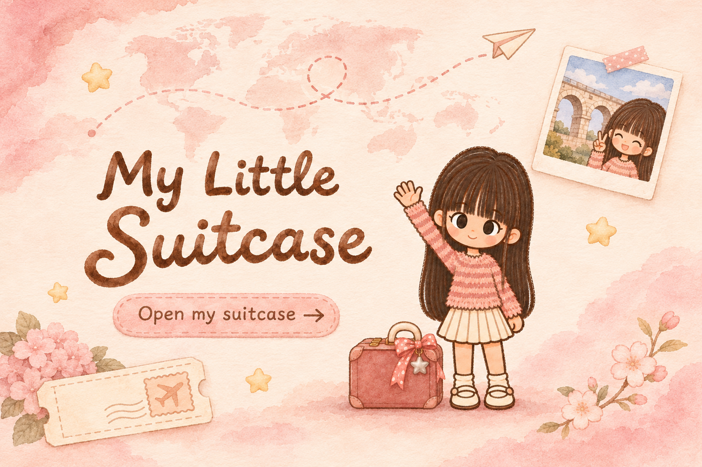
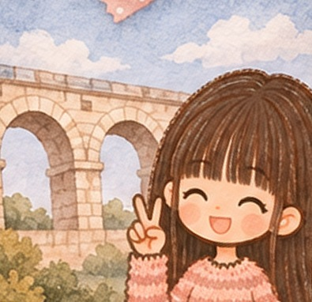

<!doctype html>
<html lang="zh-CN">
<meta charset="utf-8">
<meta name="viewport" content="width=device-width,initial-scale=1,viewport-fit=cover">
<meta name="theme-color" content="#f8ece1">
<title>My Little Suitcase · 我的旅行手帐</title>
<style>
*{box-sizing:border-box}
:root{color-scheme:light;font-family:ui-rounded,"PingFang SC",system-ui,sans-serif;color:#674d40;background:#faf2e9}
body{margin:0;min-height:100svh;display:grid;place-items:center;padding:10px;background:radial-gradient(ellipse at 5% 12%,#f6dfd7,transparent 57%),radial-gradient(ellipse at 100% 90%,#f3ddd2,transparent 64%),#fbf4ea}
main{width:min(100%,1536px,calc((100svh - 20px)*1.5))}
.stage{position:relative;aspect-ratio:3/2;isolation:isolate;overflow:hidden;border-radius:12px;box-shadow:0 7px 32px #6e41381c;user-select:none;-webkit-user-select:none;touch-action:manipulation}
.scene,.layer{position:absolute;inset:0;width:100%;height:100%;pointer-events:none}
.scene{display:block}
.hotspot{position:absolute;border:0;border-radius:50%;padding:0;background:transparent;touch-action:none;cursor:pointer;-webkit-tap-highlight-color:transparent}
#enter{left:15.3%;top:62.3%;width:33.2%;height:10.3%;border-radius:60px;touch-action:manipulation}
#enter:hover{background:rgba(255,248,234,.14);box-shadow:0 0 0 2px #bb715c66}
button:focus-visible{outline:3px dashed #86452e;outline-offset:3px}
footer{min-height:40px;display:flex;align-items:center;justify-content:space-between;gap:8px;padding:7px 5px 0;font-size:clamp(11px,1.2vw,13px);letter-spacing:.04em}
#back{position:absolute;left:8.6%;top:14.7%;transform:translate(-50%,-50%);width:7.4%;height:8.3%;min-width:44px;min-height:44px;border:0;border-radius:35%;padding:0;display:grid;place-items:center;background:transparent;cursor:pointer;touch-action:manipulation;-webkit-tap-highlight-color:transparent}
#back svg{width:96%;height:85%;overflow:visible;filter:drop-shadow(0 2px 1px #69463655);transition:transform .14s ease-out}
#back:hover svg{transform:translateX(-3%) rotate(-3deg)}
#back:active svg{transform:scale(.93)}
@media(prefers-reduced-motion:reduce){#back svg{transition:none}#back:hover svg,#back:active svg{transform:none}}
[hidden]{display:none!important}
@media(max-width:600px){body{padding:5px}.stage{border-radius:8px}footer{min-height:46px}}
.stage{container-type:inline-size}
#back,.music-key{z-index:5}
#back{left:12.6%;top:16.1%;width:6.5%;height:7.4%;min-width:0;min-height:0}
#back::before,.music-key::before{content:"";position:absolute;left:50%;top:50%;width:max(100%,44px);height:max(100%,44px);transform:translate(-50%,-50%)}
.music-key{position:absolute;right:4.5%;bottom:5%;width:6%;height:8%;display:grid;place-items:center;border:0;padding:0;border-radius:40%;color:#9e6652;background:none;cursor:pointer;touch-action:manipulation}
[data-page="menu"] .music-key{right:10.35%;bottom:11.35%;width:4.15%;height:5.4%}
#doll-invitation{position:absolute;left:47.65%;bottom:57.1%;transform:rotate(-2deg);transform-origin:bottom left;padding:.48em .83em;background:#fff6e5;border:1.5px solid #b97f70;border-radius:1em 1.1em 1em .65em;box-shadow:.05em .16em #d39d8b8c;color:#78473b;font:600 clamp(10px,1.4cqw,22px)/1.3 ui-rounded,"PingFang SC",sans-serif;white-space:nowrap;pointer-events:none;z-index:3;animation:invite-breathe 5s both}
#doll-invitation::after{content:"";position:absolute;left:6%;bottom:-.34em;width:.55em;height:.55em;background:#fff6e5;border-right:1.5px solid #b97f70;border-bottom:1.5px solid #b97f70;transform:skew(-16deg,-8deg) rotate(45deg)}
[data-page="welcome"] #doll-invitation{left:auto;right:29.7%;bottom:70.5%;transform-origin:bottom right}
[data-page="welcome"] #doll-invitation::after{left:auto;right:12%}
@keyframes invite-breathe{0%{opacity:0;translate:0 .22em}17%,78%{opacity:1;translate:0 0}100%{opacity:0;translate:0 -.16em}}
@media(prefers-reduced-motion:reduce){#doll-invitation{animation-name:invite-opacity}@keyframes invite-opacity{0%,100%{opacity:0}17%,78%{opacity:1}}}
.music-key svg{width:100%;height:100%;filter:drop-shadow(0 2px 1px #8d594952)}
.music-key[data-playing=true] svg{filter:drop-shadow(0 0 3px #fff2b9) drop-shadow(0 2px 2px #866749)}
.illustrated{background-repeat:no-repeat;background-color:transparent;border:0;padding:0;display:block}
.portal{position:absolute;cursor:pointer;touch-action:manipulation;transition:transform 150ms ease-out,filter 150ms;z-index:2}
.portal:is(:hover,:focus-visible){transform:scale(1.027);filter:brightness(1.055)}
.portal:focus-visible{filter:brightness(1.15) saturate(1.25)}
.music-box h2{font-family:"Baskerville","Palatino Linotype",Georgia,serif;font-weight:500;letter-spacing:-.04em;margin:0}
.stage[data-detail=true] #back{left:12.3%;top:17.6%}
.music-box{--ink:#684535;position:fixed;inset:auto;left:var(--box-x,50%);top:var(--box-y,50%);transform:translate(-50%,-50%);margin:0;width:clamp(250px,var(--box-width,38vw),520px);max-width:calc(100vw - 22px);max-height:min(90dvh,510px);padding:clamp(14px,2vw,27px);border:2px solid #bd8c75;border-radius:17px 20px 18px 20px;color:var(--ink);box-shadow:0 3px 0 #d69c84,0 12px 38px #57372c45;background:radial-gradient(ellipse at 97% 0%,#f5caba9c,transparent 65%),linear-gradient(150deg,#fff8e9,#fceedc);overflow:hidden}
.music-box[open]{display:flex;flex-direction:column;gap:clamp(6px,1vw,13px)}
.music-box::before{content:"";position:absolute;inset:6px;border:1px dashed #d9ad93;border-radius:12px;pointer-events:none}
.music-box::backdrop{background:#49362638}
.music-box header{display:flex;align-items:center;justify-content:space-between;gap:8px}
.music-box h2{font-size:clamp(23px,3.2vw,40px);font-style:italic;line-height:1.15}
.music-box button{font:inherit;color:inherit;cursor:pointer}
#music-close{width:34px;height:34px;background:#f6dacb;border:1px solid #d9b29b;border-radius:50%;line-height:1;font-size:23px;display:grid;place-items:center}
.track-list{display:grid;gap:4px;overflow-y:auto;max-height:clamp(114px,19vw,216px);min-height:0}
.track-row{display:flex;align-items:center;gap:10px;border:none;border-bottom:1px solid #dfc6af;padding:clamp(5px,1vw,10px) 3px;text-align:left;background:transparent;min-width:0}
.track-row:is(:hover,:focus-visible),.track-row[aria-pressed=true]{background:#f3d6c351;border-radius:7px}
.track-row:focus-visible{outline-offset:-3px}
.track-row .play{border-radius:50%;width:clamp(20px,2.6vw,31px);aspect-ratio:1;background:#f1c5b2;display:grid;place-items:center;color:#834d3b;flex:none;font:12px system-ui}
.track-name{font-size:clamp(12px,1.4vw,17px);font-weight:600;overflow:hidden;white-space:nowrap;text-overflow:ellipsis}
.track-time{margin-left:auto;color:#866650;font:clamp(10px,1.1vw,13px) ui-monospace,monospace}
#add-track{padding:7px 9px;border:1px dashed #bd947c;border-radius:9px;background:#fff7e657;text-align:center;font-size:clamp(12px,1.2vw,15px)}
#music-message{margin:0;font-size:12px}
@media(max-width:600px){.music-box{padding:13px 15px}.music-box[open]{gap:6px}.track-list{max-height:120px}.track-row{min-height:34px;padding:4px}.music-box h2{font-size:23px}#music-close{height:30px;width:30px}}
@media(prefers-reduced-motion:reduce){.portal{transition:none}.portal:hover,.portal:focus-visible{transform:none}}

.visually-hidden{position:absolute;width:1px;height:1px;padding:0;overflow:hidden;clip-path:inset(50%);white-space:nowrap}
.resume-paper{position:absolute;inset:9.7% 4.3% 9.8%;background:#fff8eb;color:#52392e;border:1px solid #ba967d;border-radius:3.8% / 5.5%;box-shadow:0 4px 0 #cc9b84,0 5px 18px #673e302c;display:flex;flex-direction:column;overflow:hidden;user-select:text;-webkit-user-select:text}
.resume-bar{height:14%;min-height:34px;flex:none;display:flex;align-items:center;justify-content:space-between;padding:0 5% 0 17%;border-bottom:1px solid #e4cbb3;background:linear-gradient(95deg,#f8d8c9,#fff5e4 74%);font:italic 500 clamp(20px,3cqw,42px)/1 Baskerville,Georgia,serif}
.pdf-link{font:500 clamp(10px,1.08cqw,15px)/1.3 system-ui,sans-serif;color:#754a3c;text-decoration:none;border:1px solid #cfa78e;border-radius:30px;padding:.5em .85em;background:#fff4e5}
.resume-body{flex:1;min-height:0;display:grid;grid-template-columns:19.5% 1fr}
#resume-nav{min-height:0;overflow:auto;padding:18% 10% 8% 18%;display:flex;flex-direction:column;gap:.4em;border-right:1px dashed #d6b69b;background:#f5dfc936}
#resume-nav button{font-weight:500;line-height:1.45;font-family:inherit;font-size:clamp(11px,1.2cqw,16px);color:#785241;background:transparent;padding:.6em .4em;text-align:left;border:0;border-left:3px solid transparent;cursor:pointer}
#resume-nav button[aria-current=true]{color:#633d30;background:#f5dece;border-left-color:#c67e67;border-radius:0 4px 4px 0}
.resume-scroll{overflow-y:auto;overscroll-behavior:contain;touch-action:pan-y;scrollbar-color:#cca88e #f9edd9;scrollbar-width:thin;padding:3% 6% 7%;line-height:1.65;font-size:clamp(13px,1.25cqw,19px);outline-offset:-4px}
.resume-identity{display:flex;align-items:center;justify-content:space-between;gap:1em;margin-bottom:1.5em;padding-bottom:1.2em;border-bottom:1px solid #dcbaa1}
.resume-identity h1{margin:0;font-size:clamp(23px,3.4cqw,48px);font-family:"Songti SC","STSong",serif;letter-spacing:.09em;color:#644333}
.resume-identity img{width:clamp(48px,6.5cqw,92px);height:auto;border:4px solid #fffdf4;box-shadow:0 1px 5px #8f654b33;transform:rotate(2deg)}
.resume-identity p{margin:.55em 0 0;font-size:.86em}.resume-identity a{color:#775040;text-decoration-thickness:1px;text-underline-offset:3px}
.resume-scroll section{scroll-margin-top:.6em;margin:0 0 1.7em}
.resume-scroll h2{color:#915948;font-size:1.32em;margin:0 0 .8em;font-family:"Songti SC","STSong",serif}
.resume-scroll h3{font-size:1em;margin:.8em 0 .16em}.resume-scroll p{white-space:pre-line;margin:.2em 0 .65em}.resume-scroll .entry-meta{font-size:.87em;color:#8b624d}
#avatar-chat{--rose:#ad5972;border:1.5px solid #cca189;border-radius:22px;width:min(485px,calc(100vw - 24px));height:min(540px,calc(100dvh - 48px));max-height:92dvh;padding:0;overflow:hidden;color:#5b4033;background:#fff8ee;box-shadow:0 14px 55px #663b3247}
#avatar-chat[open]{display:flex;flex-direction:column}
#avatar-chat::backdrop{background:#503c314a}
.avatar-bar{padding:15px 18px;border-bottom:1px solid #e5c8b8;background:linear-gradient(110deg,#f9d8ce,#fff1df);display:flex;align-items:center;gap:11px}
.avatar-bar img{width:46px;height:46px;object-fit:cover;border:3px solid #fff7e9;border-radius:50%;box-shadow:0 1px 3px #8b654b3b}
.avatar-bar h2{margin:0;font-size:19px}.avatar-bar span{font-size:12px;color:#805e4c}
.close-avatar{margin-left:auto;color:#8d5749;font-size:25px;width:34px;height:34px;line-height:1;border:0;background:#ffefdf;border-radius:50%;cursor:pointer}
.chat-log{min-height:0;flex:1;overflow:auto;display:flex;flex-direction:column;align-items:flex-start;gap:12px;padding:18px 16px;overscroll-behavior:contain}
.message{max-width:91%;flex:none;border-radius:14px;padding:10px 13px;white-space:pre-wrap;overflow-wrap:anywhere;font:15px/1.65 system-ui,sans-serif}
.message.incoming{background:#f5e8d8;border-bottom-left-radius:4px}.message.outgoing{align-self:flex-end;background:#f8d4dc;border-bottom-right-radius:4px}
.message small{display:block;font-size:11px;color:#805c4c;margin-top:5px}
#chat-form{padding:10px 14px 14px;display:flex;gap:8px;border-top:1px solid #ead6c0}
#chat-input{flex:1;min-width:0;background:#fffcf6;border:1px solid #d4b09d;border-radius:12px;padding:10px 11px;font:16px system-ui;color:#513a2d}
#chat-form button{border:0;border-radius:11px;background:#b85f79;color:white;font-weight:600;padding:0 15px;cursor:pointer}
#chat-form button:disabled{opacity:.6;cursor:wait}
@media(max-width:650px) and (orientation:portrait){
 main:has(.stage[data-page=resume]){width:100%}
 .stage[data-page=resume]{aspect-ratio:auto;height:87svh}
 .stage[data-page=resume] #art{object-fit:cover}
 .resume-paper{inset:3% 1.4%}
 .resume-bar{height:54px;padding-left:21%}
 .stage[data-page=resume] #back{top:calc(3% + 27px);left:10%;width:11%;height:39px}
 .resume-body{display:flex;flex-direction:column}
 #resume-nav{flex:none;flex-direction:row;overflow-x:auto;border:0;border-bottom:1px dashed #dfc4ac;padding:4px 7px}
 #resume-nav button{flex:none;font-size:12px;padding:5px 7px}
 .resume-scroll{padding:15px;font-size:15px}
}

#skill-book{
  --grain:url("assets/bc18a79a729281b8ca.png");--ink:#664331;--rose:#a45355;--muted:#886b52;--line:#d3b79a;
  --script:Baskerville,"Palatino Linotype",Georgia,serif;--serif:"Songti SC",STSong,"Noto Serif CJK SC",serif;
  position:absolute;inset:10% 5.3% 10.7%;display:flex;flex-direction:column;padding:.75% .95% 0;
  border:1px solid #ac695d;border-radius:2.7% 3.1% 2.4% 2.8% / 3.6% 4% 4.2% 3.7%;color:var(--ink);
  background:var(--grain),linear-gradient(90deg,#d08f7a,#e7af91 47%,#b97565 50%,#e6a78d 54%,#ce8875);
  box-shadow:0 .34cqw 0 #a96856,0 .7cqw 1.2cqw #67443855;font-family:"PingFang SC",system-ui,sans-serif;isolation:isolate;
}
#skill-book button{font:inherit;color:inherit;cursor:pointer;-webkit-tap-highlight-color:transparent}
#skill-book button:focus-visible{outline:2px dashed #9c5c48;outline-offset:1px}
#skill-book button:disabled{cursor:default}
.book-spread{position:relative;min-height:0;flex:1;display:grid;grid-template-columns:1fr 1fr;perspective:1700px;touch-action:pan-y}
.book-leaf{position:relative;min-width:0;min-height:0;overflow:auto;overscroll-behavior:contain;scrollbar-width:thin;scrollbar-color:#c49b81 #f7ead3}
.left-leaf{border-radius:3% 1.6% 1% 2% / 3% 1.3% .7% 3.5%;background:var(--grain),linear-gradient(90deg,#f8e9d4 0%,#fff6e4 7%,#fff5e5 79%,#f8e8d3 95%,#ddc1a4 100%);box-shadow:inset .25cqw 0 0 #fff8ed,inset .45cqw 0 #e7cdb2}
.right-leaf{border-radius:1.8% 2.7% 2% .9% / 1.5% 3% 3% 1%;background:var(--grain),linear-gradient(90deg,#dbc0a6 0%,#f3dfc8 2.6%,#fff5e3 8%,#fff7e8 79%,#f7e7cd 100%);box-shadow:inset -.22cqw 0 #ead4b6,inset -.4cqw 0 #fff6e3}
.book-script{font:italic 500 clamp(14px,2.05cqw,31px)/1.15 var(--script);color:var(--rose);margin:0}
#skill-book h1,#skill-book h2{font-family:var(--serif);font-weight:700;line-height:1.17;margin:.24em 0;color:var(--ink)}
#skill-book h1{font-size:clamp(25px,4.75cqw,76px);letter-spacing:.055em}
#skill-book h2{font-size:clamp(22px,3.35cqw,53px);letter-spacing:.035em}
.frontispiece{min-height:100%;padding:12% 6% 6%;display:flex;align-items:center;justify-content:center;flex-direction:column;text-align:center}
.cover-photo{width:53%;max-width:290px;aspect-ratio:1.07;margin:6% auto 4.8%;position:relative;padding:2% 2% 4%;transform:rotate(-6deg);background:var(--grain),#fff9e9;border:1px solid #ddbea6;box-shadow:.12cqw .42cqw .65cqw #825c4536}
.cover-photo img{width:100%;height:100%;object-fit:cover;display:block}
.cover-photo::before{content:"";position:absolute;left:33%;top:-5%;width:37%;height:13%;transform:rotate(-3deg);background-color:#eeb1a1;background-image:repeating-linear-gradient(0deg,transparent 0 4px,#fff2df75 4px 8px),repeating-linear-gradient(90deg,transparent 0 4px,#fff2df75 4px 8px);opacity:.9;clip-path:polygon(0 5%,98% 0,96% 25%,100% 49%,96% 65%,100% 98%,0 100%,3% 74%,0 55%,3% 31%)}
.dedication{font:500 clamp(12px,1.4cqw,21px)/1.8 var(--serif);margin:.6em 0 0;color:#745140;letter-spacing:.055em}
.print-book-contents{min-height:100%;padding:13% 11% 12% 13%;display:flex;flex-direction:column;justify-content:center}
.print-book-contents h2{font-size:clamp(28px,4.25cqw,64px);margin:.18em 0 .65em}
.print-chapter-links{display:grid}
.chapter-link{display:flex;align-items:center;gap:5%;width:100%;border:0;border-top:1px solid var(--line);background:transparent;text-align:left;padding:7% 0}
.chapter-link:last-child{border-bottom:1px solid var(--line)}
.chapter-link>span:nth-child(2){display:grid;flex:none;gap:.25em;font:600 clamp(13px,1.95cqw,32px)/1.2 var(--serif)}
.chapter-link small{font:italic 500 clamp(11px,1.18cqw,19px)/1.2 var(--script);color:var(--muted)}
.index-rule{flex:1;align-self:center;border-bottom:1px dotted #c2a387}
.index-no,.skill-index-link small{font:italic 500 clamp(12px,1.45cqw,22px)/1 var(--script);color:#90664e}
.chapter-link:hover,.skill-index-link:hover{color:#9f5252!important;background:#e7b9a221}
.skill-stamp{--print:#996052;--wash:#ebc1b4;position:relative;width:clamp(38px,4.8cqw,76px);aspect-ratio:1;flex:none;display:grid;place-items:center;transform:rotate(-6deg);color:var(--print);
  background:var(--grain),var(--wash);mask:linear-gradient(#000 0 0) center/calc(100% - 7px) calc(100% - 7px) no-repeat,radial-gradient(circle at 50% 50%,#000 60%,transparent 64%) 0 0/8px 8px round}
.skill-stamp::before{content:"";position:absolute;inset:11%;border:1px solid currentColor;opacity:.68}
.skill-stamp svg{display:block;width:49%;height:49%;fill:none;stroke:currentColor;stroke-width:1.45;stroke-linecap:round;stroke-linejoin:round}
.interests .skill-stamp,#skill-book[data-chapter=interests] .print-skill-card .skill-stamp{--print:#5b7368;--wash:#d4dfc8}
.chapter-index{min-height:100%;padding:16% 8% 8% 12%;display:flex;flex-direction:column;justify-content:center}
.chapter-index h2{margin:.25em 0 .8em!important}
.print-chapter-toggle{background:none;border:0;padding:0;text-align:left;letter-spacing:inherit}
.print-chapter-toggle:disabled{color:var(--ink);opacity:1}
.print-skill-index{display:grid;grid-template-columns:1fr;align-content:start;column-gap:8%}
[data-chapter=interests] .print-skill-index{grid-template-rows:repeat(8,auto);grid-auto-flow:column;grid-template-columns:1fr 1fr}
.skill-index-link{background:transparent;border:0;border-bottom:1px dotted #d8bbaa;display:flex;justify-content:space-between;align-items:center;gap:.3em;text-align:left;padding:.57em .15em;font-size:clamp(11px,1.22cqw,18px)!important}
.skill-index-link[aria-current=page]{color:#944958!important;border-bottom:1px solid #b97d75;background:linear-gradient(90deg,#efc4bb6e,transparent);font-weight:650!important}
.skill-index-link small{font-size:.9em}
.print-skill-card{min-height:100%;padding:11% 11% 10% 13%;display:flex;flex-direction:column;align-items:center;justify-content:center;text-align:center}
.print-skill-card header{margin:6% 0 0}
.print-skill-card .skill-stamp{width:clamp(60px,9.2cqw,148px);transform:rotate(6deg)}
.print-skill-card .skill-stamp svg{stroke-width:1.28}
.skill-note{font-size:clamp(12px,1.27cqw,19px);line-height:1.85;text-align:left;border-top:1px solid var(--line);padding-top:1em;margin:0}
.print-skill-card figure{width:100%;margin:1em 0}
.print-skill-card figure img,.print-skill-card video{display:block;width:100%;height:auto;max-height:44vh;object-fit:contain;background:#eadbc8}
.print-skill-card figcaption{font-size:.9em;color:var(--muted);margin-top:.4em}
.book-controls{position:relative;min-height:clamp(28px,4.3cqw,62px);display:flex;align-items:center;justify-content:space-between;gap:8px;padding:0 4.2%;background:var(--grain),#f6e4cd;border-top:1px solid #d4b497;border-radius:0 0 .7cqw .7cqw;box-shadow:0 .13cqw #fff2dc,0 .29cqw #bd9076;margin-bottom:.6%}
.book-controls button{background:none;border:0;padding:.45em .55em;font-size:clamp(12px,1.18cqw,18px)!important}
.book-controls button:hover:enabled{text-decoration:underline;text-underline-offset:3px}
.book-controls button:disabled{opacity:.4}
.book-controls div{display:flex;gap:.75em;align-items:center}
#book-position{font:italic clamp(12px,1.2cqw,18px)/1 var(--script);color:#7f6049}
.turning-wrap{position:absolute;inset:0;z-index:4;pointer-events:none;perspective:2400px;perspective-origin:46% 40%;clip-path:inset(-1.5% -.65% -1.5% round 1%)}
.turn-underlay{position:absolute;top:0;bottom:0;width:50%;pointer-events:none}
.forward .turn-underlay{left:0}.backward .turn-underlay{left:50%}
.curl-field{position:absolute;inset:0;transform-style:preserve-3d}
.curl-band{position:absolute;left:0;top:0;height:100%;transform-origin:0 50%;transform-style:preserve-3d}
.curl-face{position:absolute;inset:0;overflow:hidden;backface-visibility:hidden;-webkit-backface-visibility:hidden;background:transparent}
.curl-front{transform:translateZ(.06px)}.curl-back{transform:rotateY(180deg) translateZ(.06px)}
.curl-print{position:absolute!important;top:0;bottom:0;width:var(--sheet-width)!important;height:100%;min-height:0;overflow:hidden!important;border-radius:0}
@property --ink-a{syntax:"<number>";inherits:false;initial-value:0}
@property --ink-b{syntax:"<number>";inherits:false;initial-value:0}
@property --glint-a{syntax:"<number>";inherits:false;initial-value:0}
@property --glint-b{syntax:"<number>";inherits:false;initial-value:0}
.curl-print{transform-origin:0 0}
.curl-ink{position:absolute;inset:0;pointer-events:none;background:linear-gradient(90deg,rgb(255 252 226 / var(--glint-a,0)),rgb(255 252 226 / var(--glint-b,0))),linear-gradient(90deg,rgb(111 79 54 / var(--ink-a,0)),rgb(111 79 54 / var(--ink-b,0)))}
.curl-shadow{position:absolute;left:0;top:0;bottom:0;width:22%;margin-left:-11%;transform-origin:center;background:linear-gradient(90deg,transparent,#64453377 20%,#51362bdb 52%,#6c504466 77%,transparent);pointer-events:none}
.stage[data-page=skills] #back{left:10.6%;top:15.8%;width:5.7%;height:6.4%}
@media(max-width:700px) and (orientation:portrait){
  main:has(.stage[data-page=skills]){width:100%}
  .stage[data-page=skills]{aspect-ratio:auto;height:94svh;min-height:440px;max-height:890px}
  .stage[data-page=skills] #art{object-fit:cover}
  .stage[data-page=skills] #back{left:11%;top:8.2%;width:11%;height:36px}
  #skill-book{inset:3.2% 1.6%;padding:5px 6px 4px;border-radius:15px}
  .book-spread{display:flex;flex-direction:column;overflow-y:auto;overflow-x:hidden;background:var(--grain),#fff3df;scrollbar-width:thin}
  .book-leaf{flex:none;overflow:visible;box-shadow:none;background:transparent;border-radius:0}
  .left-leaf{padding-top:14px}.right-leaf{flex:1}
  .frontispiece{padding:23px 16px 6px}
  .book-script{font-size:19px}
  #skill-book h1{font-size:36px}.cover-photo{width:clamp(116px,28vw,180px);padding:5px 5px 13px;margin:18px auto 7px}
  .dedication{font-size:13px;line-height:1.55}
  .print-book-contents{padding:17px 8% 20px}
  .print-book-contents>.book-script{font-size:15px}
  .print-book-contents h2{font-size:26px;margin:2px 0 10px}
  .chapter-link{padding:12px 0;gap:12px}.chapter-link .skill-stamp{width:41px}
  .chapter-link>span:nth-child(2){font-size:19px}.chapter-link small{font-size:13px}.index-no{font-size:16px}
  .book-controls{min-height:43px;padding:0 1%;margin:0}.book-controls button{font-size:14px!important;min-height:42px}
  #book-position{font-size:14px}
  .chapter-index{padding:15px 8% 10px 21%;justify-content:start;border-bottom:1px dotted var(--line)}
  .chapter-index .book-script{font-size:15px}
  .chapter-index h2{font-size:23px!important;margin:.08em 0 .2em!important}
  .print-chapter-toggle{padding:5px 0}.print-chapter-toggle::after{content:"";display:inline-block;width:7px;height:7px;border-right:1.5px solid;border-bottom:1.5px solid;margin:0 0 4px 12px;transform:rotate(45deg)}
  .print-chapter-toggle[aria-expanded=true]::after{transform:rotate(225deg);vertical-align:-4px}
  .skill-index-link{font-size:14px!important;min-height:38px}
  .print-skill-card{padding:32px 10% 26px;justify-content:center}
  .print-skill-card .skill-stamp{width:96px}.print-skill-card header{margin:22px 0 0}
  .print-skill-card h2{font-size:34px}.skill-note{font-size:15px}
  .curl-print.book-spread{display:flex;flex-direction:column}
}
.print-skill-card.has-media{display:grid;grid-template-columns:auto minmax(0,1fr);align-content:start;align-items:center;justify-content:stretch;gap:0 6%;padding:8% 8% 8% 11%;text-align:left}
.has-media .skill-stamp{width:clamp(48px,5cqw,80px)!important}
.has-media header{margin:0}.has-media .book-script{font-size:clamp(15px,1.65cqw,25px)}#skill-book .has-media h2{font-size:clamp(22px,2.8cqw,41px)}
.has-media .skill-note,.skill-gallery{grid-column:1/-1}
.has-media .skill-note{white-space:pre-line;margin-top:1em}
.skill-gallery{display:grid;grid-template-columns:repeat(2,minmax(0,1fr));gap:1em .8em;margin-top:1em}
.skill-gallery figure{margin:0;min-width:0}.skill-gallery figure:only-child{grid-column:1/-1}
.skill-gallery :is(.photo-tile,.video-tile){display:block;width:fit-content;max-width:100%;min-height:0;margin-inline:auto;padding:0;border:0;background:transparent;box-shadow:0 0 0 1px #dcbea6,0 2px 4px #946d5322}
.skill-gallery :is(.photo-tile,.video-tile) img{width:auto;max-width:100%;height:auto;max-height:44vh;background:transparent}
.skill-gallery .video-play{left:50%;top:50%;transform:translate(-50%,-50%)}
@media(hover:hover) and (pointer:fine) and (prefers-reduced-motion:no-preference){
  .skill-gallery .photo-tile{transition:transform 160ms ease,box-shadow 160ms ease}
  .skill-gallery .photo-tile:is(:hover,:focus-visible){transform:translateY(-3px);box-shadow:0 0 0 1px #c6a68a,0 5px 10px #78593d38}
}
#still-viewer.photo-flight{overflow:visible;background:transparent;border-color:transparent}
#still-viewer.photo-flight > :not(.moving-photo){opacity:0}
#still-viewer .moving-photo{position:fixed;display:block;pointer-events:none;max-width:none;max-height:none;margin:0;transform-origin:0 0;box-shadow:0 6px 18px #49342a38}
.skill-gallery figcaption{font-size:clamp(11px,1.03cqw,15px);text-align:center}
@media(max-width:700px) and (orientation:portrait){.print-skill-card.has-media{padding:24px 7%}.has-media .skill-stamp{width:53px!important}.skill-gallery{gap:12px 8px}.skill-gallery figcaption{font-size:12px}}

#skill-book .has-media h2.long-skill-title{font-size:clamp(19px,2.06cqw,31px);text-wrap:balance}

#demo-camera{--choc:#604033;--peach:#e59b91;--screen:#fff4dd;--grain:url("assets/bc18a79a729281b8ca.png");position:absolute;inset:10% 5.3% 10.7%;display:flex;align-items:center;justify-content:center;isolation:isolate;overflow:hidden;border-radius:4%/6%;background:var(--grain),radial-gradient(ellipse at 12% 90%,#edd5bc,transparent 55%),linear-gradient(135deg,#f8daca,#fff3de 57%,#f0d4ba);border:1px solid #c8997e;color:var(--choc)}
.camera-body{position:relative;width:88%;height:75%;margin-top:3%;display:grid;grid-template-columns:minmax(0,1fr) 19%;gap:3%;padding:4% 3.3% 3.2% 4%;border-radius:7% 8% 7% 6%/12% 10% 12% 9%;border:2px solid #c28279;background:var(--grain),radial-gradient(ellipse at 12% 0%,#ffe8cd,transparent 52%),linear-gradient(160deg,#ffc3b2 8%,#efaa9d 45%,#ec9a90);box-shadow:inset 0 .6cqw 0 #ffe0c9,inset 0 -.5cqw .3cqw #c77c70,0 .45cqw 0 #b9796a,0 .9cqw 1.7cqw #94665044}
.camera-body::before,.camera-body::after{content:"";position:absolute;top:-2.8%;height:3%;border:1px solid #b5786c;border-radius:30% 30% 4% 4%/65% 65% 4% 4%;background:linear-gradient(#fbd0bc,#db9182)}
.camera-body::before{left:13%;width:7%}.camera-body::after{right:16%;width:12%;height:4%;top:-3.8%}
.camera-screen{min-width:0;min-height:0;overflow:auto;overscroll-behavior:contain;touch-action:pan-y;padding:4% 4.6%;border:clamp(3px,.62cqw,9px) solid #81594f;border-radius:5% / 7%;box-shadow:0 0 0 .24cqw #f6c2aa,inset 0 1px 5px #86563f35;background:var(--grain),radial-gradient(ellipse at 90% 4%,#fff7e3,transparent 68%),#f6e8cf;scrollbar-width:thin;scrollbar-color:#c99c84 #f5e6cd}
.camera-status{display:flex;gap:.6em;align-items:center;color:#8e6454;font:italic clamp(13px,1.42cqw,22px)/1.2 Baskerville,Georgia,serif}
.capture-mark{width:.85em;height:.64em;border:1.4px solid currentColor;border-radius:3px;position:relative}
.capture-mark::after{content:"";position:absolute;inset:20% 32%;border:1px solid;border-radius:50%}
.camera-screen h1{margin:.2em 0 .62em;font:700 clamp(22px,3.25cqw,52px)/1.17 "Songti SC",STSong,serif;letter-spacing:.04em}
#album-index{display:grid;grid-template-columns:repeat(3,minmax(0,1fr));gap:4%}
.album-button{position:relative;min-width:0;text-align:left;cursor:pointer;color:inherit;padding:0 0 .55em;background:transparent;border:0;border-bottom:1px solid #c8a78c}
.album-cover{position:relative;display:grid;place-items:center;aspect-ratio:1.23;border:4px solid #fff8e6;border-radius:1px;color:var(--print);background:var(--grain),repeating-linear-gradient(45deg,transparent 0 5px,#fff8e933 5px 6px),var(--tint);box-shadow:0 1px 3px #7d584c4d}
.album-cover::before{content:"";position:absolute;inset:5%;border:1px dashed currentColor;opacity:.48}
.album-cover svg{width:67%;height:75%;stroke:currentColor;stroke-width:2.4;fill:none;stroke-linecap:round;stroke-linejoin:round}
.cover-slides{--tint:#ebbdad;--print:#8f504d}.cover-posts{--tint:#cfdbbf;--print:#536d58}.cover-ai{--tint:#d8cadb;--print:#775773}
.album-button strong{display:block;margin-top:.62em;font:700 clamp(17px,2.02cqw,31px)/1.4 "Songti SC",STSong,serif;overflow-wrap:break-word}
.album-button:is(:hover,:focus-visible) .album-cover{transform:rotate(-2deg);filter:brightness(1.03)}
.camera-side{display:flex;flex-direction:column;align-items:center;justify-content:space-evenly;gap:3%}
.camera-label{font:italic bold clamp(24px,3.95cqw,63px)/1.3 Baskerville,Georgia,serif;color:#865443;background:var(--grain),#fff0d6;border:1px solid #c8927b;border-radius:18%/28%;padding:0 .13em;transform:rotate(-3deg);box-shadow:0 2px #d3967e}
.camera-lamp{width:12%;aspect-ratio:1;border-radius:50%;background:#c6b988;box-shadow:inset 0 1px 2px #76684e,0 1px #ffe0bf}
.camera-dial{width:100%;aspect-ratio:1;max-width:145px;display:flex;align-items:center;justify-content:center;border-radius:50%;border:2px solid #cd8d79;background:var(--grain),linear-gradient(140deg,#ffd4bc,#efae98);box-shadow:inset 1px 2px 2px #ffe7ce,0 3px 2px #b87b6c}
.camera-dial button{border:0;background:transparent;cursor:pointer;color:#7e4b3c;font:600 clamp(17px,2.1cqw,33px)/1 system-ui;padding:.3em .14em;min-width:23%}
.camera-dial #album-home{min-width:42%;aspect-ratio:1;border-radius:50%;border:1px solid #c6937d;background:#f7c6b0;font:600 clamp(10px,1.06cqw,16px) system-ui}
#album-home:disabled{opacity:.6;cursor:default}
.album-slip{display:flex;align-items:center;gap:6%;margin:5% 0;padding:4.6%;border:1px dashed #c9aa8b;background:#fff6e557}
.album-slip .album-cover{flex:none;width:30%;transform:rotate(-3deg)}.album-slip p{font:500 clamp(12px,1.36cqw,21px)/1.75 "Songti SC",serif;margin:0}
#album-detail figure{margin:1em 0}#album-detail figure img,#album-detail figure video{display:block;max-width:100%;max-height:36vh;margin:auto}#album-detail figcaption{margin-top:.5em}
.work-download{display:inline-block;color:#804a43;padding:1em;background:#f4d9c3;border-radius:.5em}
.video-tile{width:100%;min-height:65px;position:relative;display:grid;place-items:center;padding:0;border:0;border-radius:8px;overflow:hidden;background:#4a3733;cursor:pointer}
.video-tile video{width:100%;display:block;pointer-events:none}.video-play{position:absolute;display:grid;place-items:center;width:46px;height:46px;color:#fff6eb;background:#49352cbb;border:1px solid #fff7e6;border-radius:50%;font:18px/1 system-ui}
#clip-viewer{width:min(840px,94vw);max-height:92dvh;padding:0;border:1px solid #bc9880;border-radius:12px;background:#fff3e2;color:#593d31}
#clip-viewer::backdrop{background:#352b24ab}#clip-viewer header{display:flex;align-items:center;justify-content:space-between;gap:12px;padding:10px 16px}#clip-viewer h2{font-size:16px;margin:0}
#clip-close{cursor:pointer;color:inherit;background:#f6daca;border:1px solid #d4ab93;border-radius:18px;padding:7px 12px}
#clip-player{width:100%;max-height:76dvh;display:block;background:#2d2522}#clip-error{padding:4px 16px}
@media(max-width:700px) and (orientation:portrait){
  main:has(.stage[data-page=demo]){width:100%}.stage[data-page=demo]{aspect-ratio:auto;height:94svh;min-height:440px;max-height:900px}.stage[data-page=demo] #art{object-fit:cover}
  #demo-camera{inset:2.8% 1.5%;border-radius:18px}
  .stage[data-page=demo] #back{left:10%;top:7.3%;width:11%;height:37px}
  .camera-body{margin-top:8%;width:94%;height:85%;display:flex;flex-direction:column;padding:18px 12px 10px;gap:8px;border-radius:22px}
  .camera-screen{flex:1;padding:14px 13px;min-height:0;border-radius:13px}
  .camera-status{font-size:14px}.camera-screen h1{font-size:29px;margin:.15em 0 .42em}
  #album-index{display:flex;flex-direction:column;gap:10px}
  .album-button{display:grid;align-content:center;align-items:center;grid-template-columns:34% 1fr;column-gap:13px;padding:1px 0 9px}
  .album-button .album-cover{width:100%}.album-button strong{font-size:22px;margin:0}
  .camera-side{flex:none;flex-direction:row;justify-content:space-between;padding:0 7px}
  .camera-lamp{width:7px}.camera-label{font-size:28px}.camera-dial{width:112px;height:40px;aspect-ratio:auto;border-radius:30px}.camera-dial button{font-size:22px}.camera-dial #album-home{min-width:42px;aspect-ratio:auto;height:30px;font-size:12px;border-radius:15px}
  .album-slip{display:grid;justify-items:center;gap:20px;text-align:center;padding:24px 12px}.album-slip .album-cover{width:50%}.album-slip p{font-size:14px}
}
@media(prefers-reduced-motion:reduce){.album-button:is(:hover,:focus-visible) .album-cover{transform:none}}
.photo-tile{display:block;width:100%;margin:0;padding:0;border:0;background:transparent;cursor:zoom-in}
.deck-cover{position:relative;cursor:pointer;overflow:hidden;border-radius:5px}
#album-detail .deck-cover img{width:100%;height:auto;max-height:none}
.deck-cover span{position:absolute;right:8px;bottom:8px;padding:.35em .7em;border-radius:20px;background:#40362ddd;color:#fff8ea;font-size:clamp(12px,1.2cqw,16px)}
.deck-cover+.work-download{margin-top:.6em;padding:.45em .8em;font-size:clamp(12px,1.13cqw,16px)}
#still-viewer{padding:0;width:fit-content;max-width:96vw;max-height:94dvh;color:#583e32;background:#fff6e8;border:1px solid #c29b83;border-radius:13px}
#still-viewer[open]{display:flex;flex-direction:column;align-items:stretch}
#still-viewer::backdrop{background:#362a24bc}
#still-viewer header,#still-viewer nav{display:flex;align-items:center;justify-content:space-between;gap:15px;padding:8px 12px}
#still-title{margin:0;font-size:16px}
#still-viewer button{font:inherit;color:inherit;background:#f5e0cb;border:1px solid #d2aa93;border-radius:18px;padding:5px 12px;cursor:pointer}
#still-viewer button:disabled{opacity:.4;cursor:default}
#still-viewer nav{justify-content:center;font-size:14px}
#still-image{min-height:0;max-height:calc(90dvh - 100px);max-width:min(93vw,1420px);object-fit:contain;width:auto;align-self:center}
.post-album{font:400 clamp(13px,1.14cqw,17px)/1.65 system-ui;color:#634335}
.post-overview p{margin:0 0 .7em;line-height:1.75}
.post-overview strong{color:#864a42;font-weight:680}
.post-views{display:flex;gap:.25em;padding-bottom:.35em;margin-bottom:1em;border-bottom:1px solid #c4aa91}
.post-views button{font:inherit;font-weight:600;color:inherit;background:transparent;border:1px solid transparent;border-radius:.35em;padding:.45em .85em;cursor:pointer}
.post-views button[aria-pressed=true]{color:#364e3d;background:#dfe7d5;border-color:#a7b79d}
#comment-journal{container-type:inline-size}
.journal-intro{border-left:3px solid #8d9d79;margin:.1em 0 1.15em;padding:.35em .8em;color:#4f654c;font:600 1.2em/1.65 "Songti SC",STSong,serif}
.journal-entry{display:grid;align-items:start;grid-template-columns:minmax(0,1fr) minmax(0,.95fr);gap:1.15em;border-top:1px dashed #c5ac91;padding:1.25em 0}
.journal-entry h2{font:700 1.25em/1.45 "Songti SC",STSong,serif;margin:0 0 .45em}
.journal-entry p{margin:0;line-height:1.8}
.journal-entry .photo-tile{padding:4px;border:1px solid #d1bba3;background:white;border-radius:4px;box-shadow:0 2px 5px #6246321a}
.journal-entry img{display:block;width:100%;height:auto}
@container(max-width:490px){.journal-entry{grid-template-columns:minmax(0,1fr);gap:.8em}.journal-entry .photo-tile{width:min(100%,350px);justify-self:center}}
@media(max-width:700px) and (orientation:portrait){#comment-journal{font-size:14px}}
@media(min-width:701px) and (min-height:480px){
  .camera-body:has(.post-album){height:83%}
  #album-detail .video-tile:has(img){aspect-ratio:2.8}
  #album-detail .video-tile img{width:100%;height:100%;max-height:none;object-fit:cover;object-position:50% 40%}
}
.post-filters{display:flex;flex-wrap:wrap;gap:.6em 1em;margin:1.2em 0 .85em}
.post-filters label{display:flex;align-items:center;gap:.42em;min-width:0;font-weight:600}
.post-filters select{max-width:100%;min-height:34px;border:1px solid #c4a487;border-radius:.42em;background:#fff8ea;color:#604033;padding:.3em .35em;font:inherit;font-weight:450}
.post-empty{font-size:.9em;color:#77594a;margin:.45em 0 .8em}
.post-grid{display:grid;grid-template-columns:repeat(2,minmax(0,1fr));gap:1.2em .9em}
.post-card{display:flex;flex-direction:column;align-items:stretch;min-width:0;border:1px solid #d4b79a;border-radius:5px;background:#fff9ee;box-shadow:0 2px 4px #6246321a;padding:5px;text-align:left;cursor:zoom-in;font:inherit;color:inherit}
.post-card:is(:hover,:focus-visible){border-color:#a16f5b;box-shadow:0 3px 8px #70463838}
.post-card img{width:100%;aspect-ratio:4/3;object-fit:cover;object-position:50% 32%;display:block;border-radius:2px}
.post-card strong,.post-byline,.post-metrics{margin-inline:5px}
.post-card strong{font:700 1.13em/1.45 "Songti SC",STSong,serif;margin-bottom:.6em}
.post-byline{font-size:.82em;color:#715a4b;margin-top:.65em;margin-bottom:.25em}
.post-metrics{display:flex;flex-wrap:wrap;gap:0 .55em;align-items:baseline;margin-top:auto;padding:.38em 0 .15em;border-top:1px solid #e7d5bf;color:#963e52;font-weight:650}
.post-metrics span{font-size:.78em;font-weight:450;color:#765749}
@media(max-width:700px) and (orientation:portrait){
  .post-filters{display:grid;grid-template-columns:minmax(0,1fr) minmax(0,1fr)}
  .post-filters label{flex-direction:column;align-items:stretch;gap:.15em}
  .post-grid{gap:.8em .55em}.post-card{padding:3px}.post-card img{aspect-ratio:1}
  .post-metrics span{flex-basis:100%}.post-card strong{font-size:1.08em}
}
#still-viewer header{gap:8px}
#still-title{flex:1;min-width:0;line-height:1.4}
#still-viewer header button{flex:none;font-size:14px;min-height:33px}
#still-canvas{min-height:0;max-height:calc(90dvh - 100px);overflow:auto;overscroll-behavior:contain}
#still-image{display:block;margin-inline:auto}
#still-viewer.is-zoomed{width:96vw}
#still-viewer.is-zoomed #still-image{max-width:none;max-height:none;width:auto;height:auto}
#still-viewer.is-zoomed #still-canvas{touch-action:pan-x pan-y}

</style>
<svg width="0" height="0" aria-hidden="true" focusable="false" style="position:absolute;pointer-events:none"><defs id="object-masks"></defs></svg>
<main>
  <div class="stage" aria-label="我的旅行手帐">
    
    <canvas class="layer" id="layer" width="1536" height="1024" aria-hidden="true"></canvas>
    <button class="hotspot" id="doll" aria-label="小人的八种姿势，按左右方向键切换"></button>
    <div id="doll-invitation" aria-hidden="true" hidden></div>
    <button class="hotspot" id="enter" aria-label="打开行李箱，进入主菜单"></button>
    <button id="back" aria-label="返回欢迎页" title="返回欢迎页" hidden>
      <svg viewBox="0 0 112 80" aria-hidden="true" focusable="false">
        <defs>
          <path id="arrow-shape" d="M12 37 Q23 22 49 9 Q57 5 56 15 L55 26 Q80 22 97 31 Q103 34 103 40 L101 55 Q100 63 93 59 Q75 48 54 52 L54 66 Q54 75 46 70 Q24 58 12 47 Q7 43 12 37Z"/>
          <linearGradient id="berry" x2=".25" y2="1" gradientUnits="objectBoundingBox"><stop stop-color="#ffe1e8"/><stop offset=".5" stop-color="#ffadca"/><stop offset="1" stop-color="#f78db1"/></linearGradient>
        </defs>
        <g stroke-linejoin="round" stroke-linecap="round">
          <use href="#arrow-shape" transform="translate(0 2)" fill="#ec91ad" stroke="#fff1d8" stroke-width="9"/>
          <use href="#arrow-shape" fill="url(#berry)" stroke="#b95a7b" stroke-width="2.8"/>
          <path d="M21 39 Q32 26 46 20 M63 32 Q77 30 85 33" fill="none" stroke="#fff1e2" stroke-width="4.2"/>
          <path d="M18 46 Q30 57 46 65" fill="none" stroke="#ef8db0" stroke-width="2.7"/>
        </g>
      </svg>
    </button>
<article id="demo-camera" hidden aria-label="Demo 作品相册">
  <div class="camera-body">
    <div class="camera-screen">
      <div class="camera-status"><span class="capture-mark" aria-hidden="true"></span><span lang="en">Playback</span></div>
      <h1 id="album-heading" tabindex="-1">作品相册</h1>
      <div id="album-index" aria-label="作品分类"></div>
      <section id="album-detail" hidden></section>
    </div>
    <aside class="camera-side">
      <span class="camera-label" lang="en">Demo</span>
      <span class="camera-lamp" aria-hidden="true"></span>
      <nav class="camera-dial" aria-label="相机相册导航">
        <button type="button" id="album-prev" aria-label="上一本相册">‹</button>
        <button type="button" id="album-home">目录</button>
        <button type="button" id="album-next" aria-label="下一本相册">›</button>
      </nav>
    </aside>
  </div>
</article>

    <button type="button" id="music-key" class="music-key" aria-label="打开音乐盒" title="音乐盒" aria-haspopup="dialog" aria-controls="music-box">
      <svg viewBox="0 0 90 80" aria-hidden="true">
        <defs><linearGradient id="note-pink" x2="0.2" y2="1"><stop stop-color="#ffe1e8"/><stop offset=".5" stop-color="#ffadca"/><stop offset="1" stop-color="#f78db1"/></linearGradient></defs>
        <g stroke-linecap="round" stroke-linejoin="round">
          <path id="notes" d="M32 22 Q32 18 37 17 L68 10 Q73 9 73 15 L73 52 Q73 61 63 63 Q50 66 51 57 Q52 50 62 48 L65 48 L65 27 L41 32 L41 61 Q40 70 30 72 Q16 74 17 64 Q18 57 28 54 L32 54Z"/>
          <use href="#notes" fill="#ffccdc" stroke="#fff0d7" stroke-width="9"/>
          <use href="#notes" fill="url(#note-pink)" stroke="#b95a7b" stroke-width="2.4"/>
          <path d="M38 23 L65 17 M22 62 Q24 59 29 59" stroke="#fff2f5" stroke-width="3" fill="none"/>
        </g>
      </svg>
    </button>

<article id="resume-page" class="resume-paper" aria-label="李思潼的个人简历" hidden>
  <header class="resume-bar"><span lang="en">Resume</span><a class="pdf-link" href="assets/3b2766e78a30ac9b99.pdf" download="李思潼个人简历.pdf">下载原版 PDF ↓</a></header>
  <div class="resume-body">
    <nav id="resume-nav" aria-label="简历章节"></nav>
    <div class="resume-scroll" id="resume-scroll" tabindex="0" aria-label="简历正文，可上下滚动">
      <div class="resume-identity"><div><h1 id="resume-name" tabindex="-1">李思潼</h1><p id="resume-contact"></p></div></div>
      <div id="resume-sections"></div>
    </div>
  </div>
</article>

<!-- grabfold page-turn sound
MIT License

Copyright (c) 2026 JavocSoft

Permission is hereby granted, free of charge, to any person obtaining a copy
of this software and associated documentation files (the "Software"), to deal
in the Software without restriction, including without limitation the rights
to use, copy, modify, merge, publish, distribute, sublicense, and/or sell
copies of the Software, and to permit persons to whom the Software is
furnished to do so, subject to the following conditions:

The above copyright notice and this permission notice shall be included in all
copies or substantial portions of the Software.

THE SOFTWARE IS PROVIDED "AS IS", WITHOUT WARRANTY OF ANY KIND, EXPRESS OR
IMPLIED, INCLUDING BUT NOT LIMITED TO THE WARRANTIES OF MERCHANTABILITY,
FITNESS FOR A PARTICULAR PURPOSE AND NONINFRINGEMENT. IN NO EVENT SHALL THE
AUTHORS OR COPYRIGHT HOLDERS BE LIABLE FOR ANY CLAIM, DAMAGES OR OTHER
LIABILITY, WHETHER IN AN ACTION OF CONTRACT, TORT OR OTHERWISE, ARISING FROM,
OUT OF OR IN CONNECTION WITH THE SOFTWARE OR THE USE OR OTHER DEALINGS IN THE
SOFTWARE.
 -->
<article id="skill-book" aria-label="潼潼的技能手帐" hidden>
  <svg width="0" height="0" aria-hidden="true" style="position:absolute"><defs><!-- ISC License

Copyright (c) for portions of Lucide are held by Cole Bemis 2013-2022 as part of Feather (MIT). All other copyright (c) for Lucide are held by Lucide Contributors 2022.

Permission to use, copy, modify, and/or distribute this software for any
purpose with or without fee is hereby granted, provided that the above
copyright notice and this permission notice appear in all copies.

THE SOFTWARE IS PROVIDED "AS IS" AND THE AUTHOR DISCLAIMS ALL WARRANTIES
WITH REGARD TO THIS SOFTWARE INCLUDING ALL IMPLIED WARRANTIES OF
MERCHANTABILITY AND FITNESS. IN NO EVENT SHALL THE AUTHOR BE LIABLE FOR
ANY SPECIAL, DIRECT, INDIRECT, OR CONSEQUENTIAL DAMAGES OR ANY DAMAGES
WHATSOEVER RESULTING FROM LOSS OF USE, DATA OR PROFITS, WHETHER IN AN
ACTION OF CONTRACT, NEGLIGENCE OR OTHER TORTIOUS ACTION, ARISING OUT OF
OR IN CONNECTION WITH THE USE OR PERFORMANCE OF THIS SOFTWARE.
 -->
<symbol id="skill-languages" viewBox="0 0 24 24">
  <path d="m5 8 6 6" />
  <path d="m4 14 6-6 2-3" />
  <path d="M2 5h12" />
  <path d="M7 2h1" />
  <path d="m22 22-5-10-5 10" />
  <path d="M14 18h6" />
</symbol><symbol id="skill-chart-no-axes-combined" viewBox="0 0 24 24">
  <path d="M12 16v5" />
  <path d="M16 14v7" />
  <path d="M20 10v11" />
  <path d="m22 3-8.646 8.646a.5.5 0 0 1-.708 0L9.354 8.354a.5.5 0 0 0-.707 0L2 15" />
  <path d="M4 18v3" />
  <path d="M8 14v7" />
</symbol><symbol id="skill-piano" viewBox="0 0 24 24">
  <path d="M18.5 8c-1.4 0-2.6-.8-3.2-2A6.87 6.87 0 0 0 2 9v11a2 2 0 0 0 2 2h16a2 2 0 0 0 2-2v-8.5C22 9.6 20.4 8 18.5 8" />
  <path d="M2 14h20" />
  <path d="M6 14v4" />
  <path d="M10 14v4" />
  <path d="M14 14v4" />
  <path d="M18 14v4" />
</symbol><symbol id="skill-mic-vocal" viewBox="0 0 24 24">
  <path d="m11 7.601-5.994 8.19a1 1 0 0 0 .1 1.298l.817.818a1 1 0 0 0 1.314.087L15.09 12" />
  <path d="M16.5 21.174C15.5 20.5 14.372 20 13 20c-2.058 0-3.928 2.356-6 2-2.072-.356-2.775-3.369-1.5-4.5" />
  <circle cx="16" cy="7" r="5" />
</symbol><symbol id="skill-music-2" viewBox="0 0 24 24">
  <circle cx="8" cy="18" r="4" />
  <path d="M12 18V2l7 4" />
</symbol><symbol id="skill-flower-2" viewBox="0 0 24 24">
  <path d="M12 5a3 3 0 1 1 3 3m-3-3a3 3 0 1 0-3 3m3-3v1M9 8a3 3 0 1 0 3 3M9 8h1m5 0a3 3 0 1 1-3 3m3-3h-1m-2 3v-1" />
  <circle cx="12" cy="8" r="2" />
  <path d="M12 10v12" />
  <path d="M12 22c4.2 0 7-1.667 7-5-4.2 0-7 1.667-7 5Z" />
  <path d="M12 22c-4.2 0-7-1.667-7-5 4.2 0 7 1.667 7 5Z" />
</symbol><symbol id="skill-waves" viewBox="0 0 24 24">
  <path d="M2 6c.6.5 1.2 1 2.5 1C7 7 7 5 9.5 5c2.6 0 2.4 2 5 2 2.5 0 2.5-2 5-2 1.3 0 1.9.5 2.5 1" />
  <path d="M2 12c.6.5 1.2 1 2.5 1 2.5 0 2.5-2 5-2 2.6 0 2.4 2 5 2 2.5 0 2.5-2 5-2 1.3 0 1.9.5 2.5 1" />
  <path d="M2 18c.6.5 1.2 1 2.5 1 2.5 0 2.5-2 5-2 2.6 0 2.4 2 5 2 2.5 0 2.5-2 5-2 1.3 0 1.9.5 2.5 1" />
</symbol><symbol id="skill-car-front" viewBox="0 0 24 24">
  <path d="m21 8-2 2-1.5-3.7A2 2 0 0 0 15.646 5H8.4a2 2 0 0 0-1.903 1.257L5 10 3 8" />
  <path d="M7 14h.01" />
  <path d="M17 14h.01" />
  <rect width="18" height="8" x="3" y="10" rx="2" />
  <path d="M5 18v2" />
  <path d="M19 18v2" />
</symbol><symbol id="skill-plane" viewBox="0 0 24 24">
  <path d="M17.8 19.2 16 11l3.5-3.5C21 6 21.5 4 21 3c-1-.5-3 0-4.5 1.5L13 8 4.8 6.2c-.5-.1-.9.1-1.1.5l-.3.5c-.2.5-.1 1 .3 1.3L9 12l-2 3H4l-1 1 3 2 2 3 1-1v-3l3-2 3.5 5.3c.3.4.8.5 1.3.3l.5-.2c.4-.3.6-.7.5-1.2z" />
</symbol><symbol id="skill-camera" viewBox="0 0 24 24">
  <path d="M14.5 4h-5L7 7H4a2 2 0 0 0-2 2v9a2 2 0 0 0 2 2h16a2 2 0 0 0 2-2V9a2 2 0 0 0-2-2h-3l-2.5-3z" />
  <circle cx="12" cy="13" r="3" />
</symbol><symbol id="skill-clapperboard" viewBox="0 0 24 24">
  <path d="M20.2 6 3 11l-.9-2.4c-.3-1.1.3-2.2 1.3-2.5l13.5-4c1.1-.3 2.2.3 2.5 1.3Z" />
  <path d="m6.2 5.3 3.1 3.9" />
  <path d="m12.4 3.4 3.1 4" />
  <path d="M3 11h18v8a2 2 0 0 1-2 2H5a2 2 0 0 1-2-2Z" />
</symbol><symbol id="skill-feather" viewBox="0 0 24 24">
  <path d="M12.67 19a2 2 0 0 0 1.416-.588l6.154-6.172a6 6 0 0 0-8.49-8.49L5.586 9.914A2 2 0 0 0 5 11.328V18a1 1 0 0 0 1 1z" />
  <path d="M16 8 2 22" />
  <path d="M17.5 15H9" />
</symbol><symbol id="skill-book-open" viewBox="0 0 24 24">
  <path d="M12 7v14" />
  <path d="M3 18a1 1 0 0 1-1-1V4a1 1 0 0 1 1-1h5a4 4 0 0 1 4 4 4 4 0 0 1 4-4h5a1 1 0 0 1 1 1v13a1 1 0 0 1-1 1h-6a3 3 0 0 0-3 3 3 3 0 0 0-3-3z" />
</symbol><symbol id="skill-sparkles" viewBox="0 0 24 24">
  <path d="M9.937 15.5A2 2 0 0 0 8.5 14.063l-6.135-1.582a.5.5 0 0 1 0-.962L8.5 9.936A2 2 0 0 0 9.937 8.5l1.582-6.135a.5.5 0 0 1 .963 0L14.063 8.5A2 2 0 0 0 15.5 9.937l6.135 1.581a.5.5 0 0 1 0 .964L15.5 14.063a2 2 0 0 0-1.437 1.437l-1.582 6.135a.5.5 0 0 1-.963 0z" />
  <path d="M20 3v4" />
  <path d="M22 5h-4" />
  <path d="M4 17v2" />
  <path d="M5 18H3" />
</symbol><symbol id="skill-cooking-pot" viewBox="0 0 24 24">
  <path d="M2 12h20" />
  <path d="M20 12v8a2 2 0 0 1-2 2H6a2 2 0 0 1-2-2v-8" />
  <path d="m4 8 16-4" />
  <path d="m8.86 6.78-.45-1.81a2 2 0 0 1 1.45-2.43l1.94-.48a2 2 0 0 1 2.43 1.46l.45 1.8" />
</symbol><symbol id="skill-coffee" viewBox="0 0 24 24">
  <path d="M10 2v2" />
  <path d="M14 2v2" />
  <path d="M16 8a1 1 0 0 1 1 1v8a4 4 0 0 1-4 4H7a4 4 0 0 1-4-4V9a1 1 0 0 1 1-1h14a4 4 0 1 1 0 8h-1" />
  <path d="M6 2v2" />
</symbol><symbol id="skill-martini" viewBox="0 0 24 24">
  <path d="M8 22h8" />
  <path d="M12 11v11" />
  <path d="m19 3-7 8-7-8Z" />
</symbol></defs></svg>
  <div class="book-spread">
    <section class="book-leaf left-leaf">
      <div class="frontispiece">
        <p class="book-script" lang="en">Liszt's Notebook</p>
        <h1 class="print-book-title" id="book-title" tabindex="-1">技能手帐</h1>
        <figure class="cover-photo"></figure>
        <p class="dedication">你好呀，想从哪一页开始认识我？</p>
      </div>
      <div class="chapter-index" hidden>
        <p id="chapter-en" class="book-script" lang="en"></p>
        <h2><button class="print-chapter-toggle" id="chapter-toggle" type="button" aria-controls="skill-index" aria-expanded="true"></button></h2>
        <nav class="print-skill-index" id="skill-index" aria-label="本章技能"></nav>
      </div>
    </section>
    <section class="book-leaf right-leaf">
      <div class="print-book-contents" id="book-contents">
        <p class="book-script" lang="en">Contents</p>
        <h2>目录</h2>
        <nav class="print-chapter-links" id="chapter-links" aria-label="手帐目录"></nav>
      </div>
      <div class="print-skill-card" id="skill-card" hidden></div>
    </section>
  </div>
  <nav class="book-controls" aria-label="手帐翻页">
    <button id="book-prev" type="button" aria-label="上一页">‹ <span>上一页</span></button>
    <div><button id="book-home" type="button">目录</button><span id="book-position" aria-live="polite"></span></div>
    <button id="book-next" type="button" aria-label="下一页"><span>下一页</span> ›</button>
  </nav>
</article>

  </div>

</main>
<dialog id="music-box" class="music-box" aria-labelledby="music-title">
  <header><h2 id="music-title" lang="en">Music Box</h2><button type="button" id="music-close" aria-label="关闭音乐盒" title="关闭音乐盒">×</button></header>
  <div class="track-list" id="tracks" aria-label="曲目"></div>
  <p role="status" id="music-message" hidden></p>
  <button type="button" id="add-track"><span aria-hidden="true">＋</span> 添加本地音乐</button>
  <input type="file" accept="audio/*,.mp3,.m4a,.aac,.wav,.ogg,.flac" multiple id="audio-file" hidden>
</dialog>
<audio id="player" preload="none" loop></audio>

<dialog id="avatar-chat" aria-labelledby="avatar-name">
  <header class="avatar-bar"><div><h2 id="avatar-name">潼潼的AI分身</h2></div><button type="button" class="close-avatar" aria-label="关闭对话">×</button></header>
  <div class="chat-log" role="log" aria-label="对话记录" aria-live="polite"><div class="message incoming">你好呀，我是潼潼的AI分身。想和我聊聊什么？</div></div>
  <form id="chat-form"><label for="chat-input" class="visually-hidden">给潼潼的分身留言</label><input id="chat-input" maxlength="1000" placeholder="问问潼潼的经历..." autocomplete="off" required><button type="submit">发送</button></form>
</dialog>

<dialog id="clip-viewer" aria-labelledby="clip-title">
  <header><h2 id="clip-title">视频</h2><button type="button" id="clip-close" aria-label="退出视频">退出视频 ×</button></header>
  <video id="clip-player" playsinline controls preload="metadata"></video>
  <p id="clip-error" role="status" hidden>这段视频暂时无法播放。</p>
</dialog>
<dialog id="still-viewer" aria-labelledby="still-title">
  <header><h2 id="still-title"></h2><button type="button" id="still-zoom" aria-pressed="false">原图大小</button><button type="button" id="still-close" aria-label="关闭预览">关闭 ×</button></header>
  <div id="still-canvas"></div>
  <nav aria-label="浏览图片"><button type="button" id="still-prev">上一张</button><span id="still-count" aria-live="polite"></span><button type="button" id="still-next">下一张</button></nav>
</dialog>

<script>
'use strict';
const assets={"menu": "assets/adeb09ad8761d5db91.svg", "atlas": "assets/90223da81b7467ae1b.webp", "welcomePatch": "assets/cb1216a2237597a070.png", "menuPatch": "assets/278c32cdee5fda68cf.png", "patchBounds": {"welcome": [830, 289, 1196, 932], "menu": [518, 293, 785, 816]}};
const timeline={"schemaVersion": 1, "fps": 1, "frameDuration": 1, "initialState": "挥手", "states": [{"id": "站立", "frame": 0, "hold": 0}, {"id": "跷脚", "frame": 1, "hold": 1}, {"id": "比耶", "frame": 2, "hold": 2}, {"id": "眨眼", "frame": 3, "hold": 3}, {"id": "比心", "frame": 4, "hold": 4}, {"id": "跳跃", "frame": 5, "hold": 5}, {"id": "托腮", "frame": 6, "hold": 6}, {"id": "挥手", "frame": 7, "hold": 7}], "segments": []};
const cells={"version": 1, "type": "sprite-atlas", "asset": "poses.webp", "frameCount": 8, "columns": 4, "rows": 2, "cellWidth": 848, "cellHeight": 1056, "atlasWidth": 3392, "atlasHeight": 2112, "quality": 93, "lossless": false, "files": ["00.png", "01.png", "02.png", "03.png", "04.png", "05.png", "06.png", "07.png"]};
const scenes={
  welcome:{x:1045,y:606,foot:898,radius:345,scale:.434,rest:'挥手',alt:'欢迎页。小人在粉色行李箱旁挥手，背景是手绘旅行地图。'},
  menu:{x:650,y:554,foot:782,radius:271,scale:.345,rest:'跷脚',alt:'打开的行李箱。小人站在水彩街景里，周围是 Resume 行李牌、Skills 手帐和 Demo 相机。'}
};
const clockwise=['站立','跷脚','托腮','眨眼','比心','挥手','跳跃','比耶'];
const stateByName=new Map(timeline.states.map(state=>[state.id,state]));
const art=document.querySelector('#art'),stage=document.querySelector('.stage');
const canvas=document.querySelector('#layer'),ctx=canvas.getContext('2d');
const doll=document.querySelector('#doll'),enter=document.querySelector('#enter'),back=document.querySelector('#back');
const reduced=matchMedia('(prefers-reduced-motion: reduce)');
let page='welcome',ready=false,queued=0,current=null,desired=null,lastSector=null,gesture=null,ignoreClick=false;
const preload=url=>new Promise((resolve,reject)=>{
  const img=new Image();img.onload=()=>resolve(img);img.onerror=reject;img.src=url;
});
const originals={welcome:art.src,menu:assets.menu};
const patches={};
let sheet;
// Discrete frame-scrub: coalesce pointer changes into one paint, hold the selected atlas cell.
function paint(){
  queued=0;
  if(current===desired)return;
  ctx.clearRect(0,0,canvas.width,canvas.height);
  current=desired;
  canvas.dataset.pose=current||'rest';
  if(!current || current===scenes[page].rest || !ready)return;
  const s=scenes[page],box=assets.patchBounds[page];
  ctx.drawImage(patches[page],box[0],box[1]);
  const index=stateByName.get(current).frame;
  const {cellWidth:w,cellHeight:h,columns}=cells;
  // All source poses retain their original 1024 × 1536 registration, even when jumping.
  const scale=s.scale*1536/h;
  ctx.drawImage(sheet,index%columns*w,Math.floor(index/columns)*h,w,h,
    s.x-w*scale/2,s.foot-1471*s.scale,w*scale,h*scale);
}
function select(name){
  if(!ready && name)return;
  desired=name;
  if(!queued)queued=requestAnimationFrame(paint);
}
function rest(){lastSector=null;select(null)}
function positionHitArea(){
  const s=scenes[page],size=s.radius*2;
  Object.assign(doll.style,{left:(s.x-s.radius)/1536*100+'%',top:(s.y-s.radius)/1024*100+'%',width:size/1536*100+'%',height:size/1024*100+'%',clipPath:'circle(50%)'});
}
const sections = {
  resume: {title:'Resume'},
  skills: {title:'Skills'},
  demo: {title:'Demo'}
};
const contours={
  "resume": {
    "bounds": [
      20,
      180,
      460,
      625
    ],
    "path": "M 480 197 C 469 115 422 57 360 50 C 322 43 300 53 282 83 C 271 101 258 129 257 149 C 252 181 281 205 318 217 C 353 229 398 239 444 245 C 409 238 375 231 338 230 C 256 221 195 241 149 278 C 109 313 86 364 80 417 L 120 400 Q 134 418 150 436 Q 153 438 155 433 C 160 394 170 358 190 339 C 211 320 256 307 303 294 C 263 320 230 361 202 410 C 177 453 134 526 111 567 Q 112 570 117 567 L 173 550 L 179 562 C 170 622 168 713 165 800 L 161 974 C 158 1062 185 1120 240 1161 C 289 1197 351 1208 428 1206 C 536 1203 642 1199 709 1190 C 778 1183 835 1158 863 1110 C 886 1073 895 1027 891 963 C 887 882 870 782 850 684 L 824 551 C 817 494 799 446 766 406 C 740 372 694 335 639 309 L 616 299 C 647 312 671 306 677 287 C 684 261 680 217 658 192 C 633 166 592 176 568 186 C 549 193 529 206 516 220 C 519 203 503 193 488 197 Z"
  },
  "skills": {
    "bounds": [
      810,
      125,
      615,
      440
    ],
    "path": "M 230 98 Q 229 68 267 63 C 329 47 414 65 472 81 C 528 98 578 128 602 166 C 640 121 701 96 778 82 C 882 61 969 65 1036 84 C 1086 98 1116 121 1115 150 Q 1136 155 1137 183 Q 1151 186 1153 210 Q 1185 212 1188 236 Q 1189 247 1186 263 L 1097 814 Q 1093 850 1060 845 C 981 833 872 813 777 796 C 693 782 613 768 543 765 Q 530 779 502 779 Q 473 780 458 761 C 365 747 219 740 94 725 Q 61 722 64 690 Q 63 680 69 651 L 167 161 Q 172 123 194 122 L 206 121 Q 208 101 228 98 Z"
  },
  "demo": {
    "bounds": [
      845,
      540,
      615,
      330
    ],
    "path": "M 258 76 Q 269 60 318 65 Q 374 59 390 79 L 614 83 L 615 66 Q 616 42 658 44 L 718 45 Q 765 45 767 70 L 769 86 C 837 86 882 107 903 169 C 918 163 934 163 946 171 Q 961 184 963 209 C 1038 244 1107 304 1143 378 C 1176 440 1195 503 1178 553 C 1171 578 1144 593 1117 593 C 1082 591 1051 570 1039 542 C 1025 510 1024 475 1024 433 C 1023 371 995 312 961 277 Q 960 316 950 330 Q 965 343 949 358 Q 957 366 966 393 L 992 397 C 1012 400 1013 417 1004 430 L 984 450 L 989 477 Q 992 503 969 498 L 937 482 L 912 496 L 906 497 C 900 548 893 582 871 605 C 854 624 830 632 795 632 C 641 631 461 619 313 614 L 166 609 C 106 606 79 586 65 546 C 55 516 55 480 56 430 L 62 309 C 65 255 72 200 92 157 C 108 119 138 94 172 85 Q 206 75 254 78 Z M 994 258 C 1043 299 1085 340 1112 389 C 1137 436 1150 485 1146 522 Q 1145 552 1128 557 C 1105 562 1088 545 1077 518 C 1063 479 1062 434 1053 389 C 1044 338 1023 291 994 258 Z M 911 245 L 914 245 Q 912 251 911 260 Z M 912 317 Q 914 323 918 326 Q 908 344 920 358 L 911 375 Q 912 351 912 317 Z M 928 340 Q 935 342 943 339 Q 941 349 935 349 Q 929 348 928 340 Z"
  }
};
const svgNamespace='http://www.w3.org/2000/svg';
const defs=document.querySelector('#object-masks');
for(const [key,geometry] of Object.entries(contours)){
  const [, ,w,h]=geometry.bounds;
  const clip=document.createElementNS(svgNamespace,'clipPath');
  const outline=document.createElementNS(svgNamespace,'path');
  clip.id='mask-'+key;
  clip.setAttribute('clipPathUnits','objectBoundingBox');
  outline.setAttribute('transform','scale('+1/(w*2)+' '+1/(h*2)+')');
  outline.setAttribute('clip-rule','evenodd');
  outline.setAttribute('d',geometry.path);
  clip.append(outline);defs.append(clip);
}
const sceneSection=document.querySelector('#demo-camera');
const musicKey=document.querySelector('#music-key');
const sectionButtons=new Map();
function objectArt(el,key) {
  const [x,y,w,h]=contours[key].bounds;
  el.style.aspectRatio=w+'/'+h;
  el.style.backgroundImage='url("'+originals.menu+'")';
  el.style.backgroundSize=(1536/w*100)+'% '+(1024/h*100)+'%';
  el.style.backgroundPosition=(x/(1536-w)*100)+'% '+(y/(1024-h)*100)+'%';
  el.style.clipPath='url(#mask-'+key+')';
}
let pendingPress=0;
async function press(button,action) {
  const token=++pendingPress;
  const origin=page;
  if(!reduced.matches && button.animate){
    const motion=button.animate([{transform:'scale(1.02)'},{transform:'scale(1.083)',offset:.62},{transform:'scale(1.055)'}],{duration:200,easing:'ease-out'});
    try{await motion.finished}catch{return}
  }
  if(token===pendingPress && origin===page)action();
}
for(const [key,section] of Object.entries(sections)){
  const btn=document.createElement('button');
  const [x,y,w,h]=contours[key].bounds;
  btn.type='button';btn.className='illustrated portal';btn.hidden=true;
  btn.dataset.section=key;btn.setAttribute('aria-label',section.title);btn.title=section.title;
  Object.assign(btn.style,{left:x/1536*100+'%',top:y/1024*100+'%',width:w/1536*100+'%',height:h/1024*100+'%'});
  objectArt(btn,key);stage.insertBefore(btn,sceneSection);sectionButtons.set(key,btn);
  btn.onclick=e=>press(btn,()=>navigate(key,e.detail===0));
}
function renderPage(focus) {
  const section=sections[page],detail=Boolean(section),isWelcome=page==='welcome';
  stage.dataset.page=page;stage.dataset.detail=String(detail);
  const artKey=isWelcome?'welcome':'menu';
  if(art.getAttribute('src')!==originals[artKey])art.src=originals[artKey];
  art.alt=detail?'':scenes[artKey].alt;
  doll.hidden=detail; canvas.hidden=detail; enter.hidden=!isWelcome;
  back.hidden=isWelcome;musicKey.hidden=detail;
  doll.setAttribute('aria-label',page==='menu'?'和潼潼的AI分身聊天':'小人的八种姿势，按左右方向键切换');
  if(page==='menu')doll.setAttribute('aria-haspopup','dialog');else doll.removeAttribute('aria-haspopup');
  back.title=detail?'返回主菜单':'返回欢迎页';
  back.setAttribute('aria-label',back.title);sceneSection.hidden=page!=='demo';
  document.querySelector('#resume-page').hidden=page!=='resume';
  skillBook.hidden=page!=='skills';
  if(skillBook.hidden)stopPageTurn();
  if(page==='menu'||(isWelcome&&ready))showInvitation();else hideInvitation();
  for(const btn of sectionButtons.values())btn.hidden=page!=='menu';
  if(page==='resume'){
    resumeScroll.scrollTop=0;markChapter();
  }else if(page==='skills'){
    turnBook(0,false);
  }else if(page==='demo'){
    showAlbum(-1,false);
  }else positionHitArea();
  if(focus)(page==='skills'?bookTitle:page==='resume'?document.querySelector('#resume-name'):detail?albumHeading:isWelcome?enter:back).focus({preventScroll:true});
}

function showPage(next,focus){
  if(next===page)return;
  ++pendingPress;gesture=null;rest();paint();
  if(clipViewer.open)closeVideo();
  if(stillViewer.open)stillViewer.close();
  if(musicBox.open)musicBox.close();
  if(avatarChat.open)avatarChat.close();
  page=next;renderPage(focus);
}
function readPage(){
  const key=location.hash.slice(1);
  return key==='menu'||Object.hasOwn(sections,key)?key:'welcome';
}
function navigate(next,keyboard){
  location.hash=next;
  showPage(next,keyboard);
}
enter.onclick=e=>navigate('menu',e.detail===0);
back.onclick=e=>navigate(sections[page]?'menu':'welcome',e.detail===0);
addEventListener('hashchange',()=>showPage(readPage(),false));
function point(e){
  const box=stage.getBoundingClientRect(),s=scenes[page];
  return {x:(e.clientX-box.left)*1536/box.width-s.x,y:(e.clientY-box.top)*1024/box.height-s.y};
}
function track(e){
  if(!ready || reduced.matches || !scenes[page] || musicBox.open || avatarChat.open)return;
  const {x,y}=point(e),r=Math.hypot(x,y);
  if(r>scenes[page].radius){rest();return}
  if(r<scenes[page].radius*.09)return;
  const angle=Math.atan2(y,x)*180/Math.PI;
  // A 4° margin on either side of each 45° sector avoids oscillation at a boundary.
  if(lastSector!==null && Math.abs(((angle-lastSector*45+540)%360)-180)<26.5)return;
  lastSector=(Math.round(angle/45)+8)%8;
  select(clockwise[lastSector]);
}
function step(delta){
  if(!ready)return;
  const idx=clockwise.indexOf(desired||scenes[page].rest);
  lastSector=null;select(clockwise[(idx+delta+8)%8]);
}
stage.addEventListener('pointermove',e=>{
  if(e.pointerType==='mouse'||e.pointerType==='pen'&&!gesture){track(e);return}
  if(!gesture || gesture.id!==e.pointerId)return;
  if(Math.hypot(e.clientX-gesture.x,e.clientY-gesture.y)>5)gesture.dragged=true;
  if(gesture.dragged)track(e);
});
doll.addEventListener('pointerdown',e=>{
  ignoreClick=false;
  if(e.pointerType==='mouse')return;
  gesture={id:e.pointerId,x:e.clientX,y:e.clientY,dragged:false};
  doll.setPointerCapture(e.pointerId);
});
doll.addEventListener('pointerup',e=>{
  if(gesture?.id!==e.pointerId)return;
  ignoreClick=gesture.dragged;gesture=null;
});
doll.onclick=()=>{if(!ignoreClick){if(page==='menu')openAvatar();else step(1)}ignoreClick=false};
doll.addEventListener('keydown',e=>{
  if(!['ArrowLeft','ArrowRight','ArrowUp','ArrowDown','Escape'].includes(e.key))return;
  e.preventDefault();
  if(e.key==='Escape')rest();else step(['ArrowLeft','ArrowUp'].includes(e.key)?-1:1);
});
stage.addEventListener('pointerleave',e=>{if(e.pointerType==='mouse'||e.pointerType==='pen')rest()});
stage.addEventListener('pointercancel',()=>{gesture=null;rest()});
stage.addEventListener('pointerdown',e=>{if(e.target!==doll && e.pointerType!=='mouse')rest()});
doll.addEventListener('blur',rest);
window.addEventListener('blur',rest);
reduced.addEventListener('change',rest);
const personalResume={
  "name": "李思潼",
  "phone": "13329177667",
  "email": "SitongLi_0627@163.com",
  "affiliation": "共青团员",
  "sections": [
    {
      "id": "education",
      "title": "教育经历",
      "entries": [
        {
          "title": "北京交通大学",
          "body": "金融 · 硕士",
          "meta": "2026.09 — 2028.06"
        },
        {
          "title": "四川外国语大学",
          "body": "金融学（翻译交叉方向） · 本科",
          "meta": "2022.09 — 2026.06"
        },
        {
          "title": "学业成绩",
          "body": "GPA 4.12，专业排名前 5%（获得保研资格），年级排名前 4%。",
          "meta": ""
        },
        {
          "title": "专业课程",
          "body": "微观经济学(91) 保险学(90) 金融工程(97) 金融风险管理(94) 外汇业务(91) 国际贸易(92) 金融科技概论(89)计量经济学(85) 概率论与数理统计(88) 中央银行学(90) 商业银行经营学(87) 会计学基础(93)",
          "meta": ""
        },
        {
          "title": "英语课程",
          "body": "金融翻译(90) 联络口译(92) 英汉笔译(92) 综合英语(90) 英语高级听力(96) 英语视听说(94)",
          "meta": ""
        },
        {
          "title": "专业证书",
          "body": "一次性通过了 CFA 一级（全球前 30%）、英语专八、英语专四、CET-6（552）、CET-4（592）",
          "meta": ""
        },
        {
          "title": "个人荣誉",
          "body": "连续四年获得校级优秀奖学金一等奖；被评为校级优秀毕业生、学生会优秀干部、校级协会外联部优秀学生干事",
          "meta": ""
        }
      ]
    },
    {
      "id": "internship",
      "title": "实习经历",
      "entries": [
        {
          "title": "儒意电影（原万达电影）",
          "body": "负责儒意电影旗下潮玩衍生品业务线的小红书及天猫渠道内容运营，基于用户画像精准匹配卖点，独立完成选题策划和内容制作；制作产品手册；协助展会策展、布展及现场销售。",
          "meta": "2026.03 — 2026.06 · 潮玩市场营销实习生"
        },
        {
          "title": "小红书渠道",
          "body": "产出 6 条破万浏览（最高 6.5w+）、6 条破千赞（最高 4000+）笔记，篇均浏览 4000+，涨粉 2000+；笔记点击率从 9.37%升至 30.27%，最高笔记支付转化率达 300%，单月商品支付额最高 20w+元",
          "meta": ""
        },
        {
          "title": "天猫渠道",
          "body": "协助产出 4 张点击率超 10%的封面图，发布多篇 10w+浏览宣发视频，实现单条视频引流直播间点击率 4.04%的转化",
          "meta": ""
        }
      ]
    },
    {
      "id": "projects",
      "title": "项目经历",
      "entries": [
        {
          "title": "全国大学生电子商务“三创赛”",
          "body": "产品生产链：主导市场调研，开发农产品及衍生品，整合当地政府与食品公司资源建立 B2C 供应链，实现 238 天零断货\n全渠道营销：线上搭建抖音等平台矩阵(35w+曝光)，策划 9 场节日活动；线下拓展高校及社区快闪点，沉淀私域社群 306 人\n数据化运营：基于用户画像分层优化定价策略，进行售后问卷调查；实现 GMV4.3w+元，打造区域农产品电商品牌",
          "meta": "国家级一等奖 · 队长"
        },
        {
          "title": "全国高校商业精英挑战赛（国际贸易赛道）",
          "body": "深度沟通供应商，敲定合作细节；设计展位布局与物料，打造沉浸式展位；结合场景化叙事完成全英产品发布会及贸易谈判",
          "meta": "国家级二等奖 · 核心成员"
        },
        {
          "title": "全国大学生数字贸易综合技能大赛（跨境直播赛道）",
          "body": "根据赛事指定产品设计双语直播脚本，研究海外直播平台合规话术，规避产品广告雷区；协调拍摄团队还原产品使用场景，将复杂产品融入日常生活，用 Premiere Pro 进行全流程制片；分析直播间互动数据，优化产品卖点策略，结束后进行数据复盘",
          "meta": "国家级三等奖 · 队长"
        }
      ]
    },
    {
      "id": "activities",
      "title": "实践经历",
      "entries": [
        {
          "title": "国际金融与贸易学院学生会文艺部",
          "body": "组织策划多场学术会议、讲座、双语晚会及新生运动会，高效管理多线程任务；对接校内外机构和社团，整合资源，引入专业团队与场地，促成 3 家赞助合作；领导 15 人团队，推动下届骨干独立落地校级活动，确保团队可持续发展",
          "meta": "2023 — 2024 · 部长"
        }
      ]
    },
    {
      "id": "skills",
      "title": "个人技能",
      "entries": [
        {
          "title": "办公与内容制作",
          "body": "熟练运用 Office、飞书等办公软件；Excel(数据透视、V-lookup、甘特图)；秀米、Canva、Ps、Pr、Visio 图文视频编辑软件；Typora 等 markdown 语言记录工具",
          "meta": ""
        },
        {
          "title": "AI 与创作",
          "body": "持续关注生成式 AI、Vibe Coding 等前沿技术，具备较强的 AI 工具探索意识，擅长运用提示词设计、人机协作及多轮迭代实现创意落地。曾借助 AI 完成桌面应用启动动画的设计与优化，善于探索 AI 在知识管理、内容创作及工作效率提升方面的应用",
          "meta": ""
        }
      ]
    },
    {
      "id": "profile",
      "title": "自我评价",
      "entries": [
        {
          "title": "",
          "body": "复合能力候选人：具备 CFA 构建的系统性商业分析思维，擅长从数据中发现问题并驱动决策；拥有从 0 到 1 策划运营项目完整经历，对用户增长和内容创作有实践与热情；双语能力强，熟悉跨文化沟通语境，对出海业务有实践经验与浓厚兴趣；喜爱社交，学习与适应力极强，能快速融入快节奏团队",
          "meta": ""
        }
      ]
    }
  ]
};
const resumeScroll=document.querySelector('#resume-scroll');
const resumeNav=document.querySelector('#resume-nav');
const chapters=[];
function textElement(tag,text,cls){
  const node=document.createElement(tag);node.textContent=text;if(cls)node.className=cls;return node;
}
const contact=document.querySelector('#resume-contact');
for(const [label,href] of [[personalResume.phone,'tel:'+personalResume.phone],[personalResume.email,'mailto:'+personalResume.email]]){
  const link=textElement('a',label);link.href=href;contact.append(link,document.createTextNode(' · '));
}
contact.append(personalResume.affiliation);
for(const section of personalResume.sections){
  const chapter=document.createElement('section');chapter.id='cv-'+section.id;
  chapter.append(textElement('h2',section.title));
  for(const item of section.entries){
    if(item.title)chapter.append(textElement('h3',item.title));
    if(item.meta)chapter.append(textElement('p',item.meta,'entry-meta'));
    chapter.append(textElement('p',item.body));
  }
  document.querySelector('#resume-sections').append(chapter);
  const button=textElement('button',section.title);button.type='button';
  button.onclick=()=>{resumeScroll.scrollTo({top:resumeScroll.scrollTop+chapter.getBoundingClientRect().top-resumeScroll.getBoundingClientRect().top-9,behavior:reduced.matches?'instant':'smooth'});};
  resumeNav.append(button);chapters.push({chapter,button});
}
function markChapter(){
  const top=resumeScroll.getBoundingClientRect().top+18;
  let active=chapters[0];
  for(const item of chapters){if(item.chapter.getBoundingClientRect().top<=top)active=item;}
  if(resumeScroll.clientHeight && resumeScroll.scrollHeight-resumeScroll.scrollTop-resumeScroll.clientHeight<2)active=chapters.at(-1);
  for(const item of chapters)item.button.setAttribute('aria-current',String(item===active));
}
resumeScroll.addEventListener('scroll',markChapter,{passive:true});

const skillGroups=[{"id": "professional", "title": "专业技能", "en": "Professional skills", "items": [{"id": "english", "title": "英语技能", "en": "English", "icon": "languages", "note": "语言学习是我本科期间专业之外的一项重要积累。我通过了英语专业八级、专业四级考试，大学英语六级 552 分、四级 592 分，国才初级获评优秀。同时，我还修读了翻译交叉专业，联络口译与英汉笔译两门课程均取得 92 分。\n\n在学习翻译的过程中，我逐渐意识到，语言从来不只是信息传递的工具。每一种语言背后，都有独特的历史、文化、生活经验与认识世界的方式。我很喜欢这样一种理解：翻译不是把我讲给你听，而是把我的眼睛借给你，让你看看我所看到的世界。即使在 AI 已经能够高效完成大量翻译工作的今天，我依然认为，亲自掌握一门语言、理解另一种文化所带来的认知体验，以及人与人之间真正的理解与共鸣，依然十分珍贵。\n\n这种认识也延伸到了我对商务英语沟通的理解。有效的商务沟通不仅需要准确、得体的语言表达，更需要理解对方的文化背景、商业诉求与思维方式，知道如何站在对方的立场组织信息、传递价值，并在差异中建立共识。金融专业与翻译学习的结合，也让我能够在理解专业信息与商业逻辑的基础上，进行跨语言、跨文化的表达与沟通。\n\n对我而言，语言既是连接人与人的桥梁，也是拓宽认知边界的窗口。它让我有机会接触未经转述的知识、理解不同的观点，并借助另一种语言的眼睛，看到世界原本不曾向我展现的一面。", "media": [{"alt": "英语专业八级", "caption": "英语专业八级", "kind": "image", "name": "english-03.jpg", "src": "assets/2eb9750ef2989edc5d.jpg"}, {"alt": "英语专业四级", "caption": "英语专业四级", "kind": "image", "name": "english-02.jpg", "src": "assets/c287c5bd4abda8eba2.jpg"}, {"alt": "大学英语六级 · 552 分", "caption": "大学英语六级 · 552 分", "kind": "image", "name": "english-05.jpg", "src": "assets/6da75db9bb9cfde0b3.jpg"}, {"alt": "大学英语四级 · 592 分", "caption": "大学英语四级 · 592 分", "kind": "image", "name": "english-04.jpg", "src": "assets/1dc9fbe34bddff2f1e.jpg"}, {"alt": "国才考试初级 · 优秀", "caption": "国才考试初级 · 优秀", "kind": "image", "name": "english-01.jpg", "src": "assets/db3113cb847de675aa.jpg"}, {"alt": "四川外国语大学翻译交叉专业修读证书", "caption": "翻译交叉专业修读证书", "kind": "image", "name": "translation-certificate.jpg", "src": "assets/7e87ae7ecff76a1de6.jpg"}]}, {"id": "cfa", "title": "CFA（特许金融分析师）", "en": "CFA", "icon": "chart-no-axes-combined", "note": "大三的11月18日，通过两个月的紧密备考，我成功通过了CFA一级考试，成绩位列全球前30%。回顾这段历程，我认为自己最大的收获并不只是记住了多少金融知识，更在于逐渐建立起了一套理解复杂问题的方式。面对一个陌生的问题，我习惯先弄清楚它背后的运行逻辑，哪些因素真正决定了结果，现有的信息是否足以支撑我的判断，以及是否存在其他可能性。金融学也让我意识到，现实中很多问题并没有标准答案，比找到一个看似正确的答案更重要的，是理解每一种选择背后的代价与可能性。\n\n本科期间，我接触了经济学、计量经济学、金融工程、管理学、大数据可视化以及跨文化沟通等不同领域的知识。经济学让我试着理解人们为什么做出某种选择，计量经济学让我意识到直觉需要经过数据的检验，管理学让我思考个体、组织与商业之间的关系，而语言和文化类课程则让我学会跳出自己熟悉的语境，从不同角度理解同一件事。我越来越享受不同学科之间产生联系的过程，因为很多有意思的想法，恰恰诞生于原本看似无关的知识之间。\n\n这种好奇心也延伸到了我的专业之外。最近，我开始主动探索 AI、Vibe Coding 等领域，尝试借助 AI 工具完成创意设计与动画项目。我很享受从一个模糊的想法出发，主动寻找知识、选择工具、反复试错，最终让想法变成具体作品的过程。对我而言，技术的吸引力不仅在于它能提高效率，更在于它拓宽了一个人能够探索和创造的边界。\n\n是的，我并不希望自己的职业可能性被所学专业预先定义。我更希望自己成为一个能够连接不同领域知识的人，既能理解商业世界的运行逻辑，也愿意拥抱新的技术与思维方式；既能够理性地分析问题，也保有探索未知、创造新事物的热情。\n\n因为我始终相信，专业是我知识的起点，而不是自己能力的边界。", "media": [{"alt": "2024 年 11 月 · CFA 一级考试通过", "caption": "2024 年 11 月 · CFA 一级考试通过", "kind": "image", "name": "cfa-01.jpg", "src": "assets/cf33ca972173c9f9e5.jpg"}]}]}, {"id": "interests", "title": "兴趣技能", "en": "Personal interests", "items": [{"id": "piano", "title": "钢琴", "en": "Piano", "icon": "piano", "media": [{"alt": "五年级的我", "caption": "五年级的我", "kind": "image", "name": "piano-01.jpg", "src": "assets/63d3b416157faf495b.jpg"}, {"alt": "现在的我", "caption": "现在的我", "kind": "image", "name": "piano-02.jpg", "src": "assets/b62290d7ae3103b7fc.jpg"}], "note": "5岁时接到的一张钢琴社传单改变了我的兴趣爱好轨迹，妈妈为此买了很多理查德·克莱德曼的钢琴曲集，还有郎朗的传记供我学习，每周一次的钢琴课构成了我童年的回忆。"}, {"id": "hosting", "title": "主持", "en": "Hosting", "icon": "mic-vocal", "media": [{"alt": "舞台上的我", "caption": "舞台上的我", "kind": "image", "name": "hosting-01.jpg", "src": "assets/b708c768d9a9494173.jpg"}, {"alt": "现场主持", "caption": "现场主持", "kind": "image", "name": "hosting-02.jpg", "src": "assets/1b6025c0ab931ec1eb.jpg"}, {"alt": "舞台全景", "caption": "舞台全景", "kind": "image", "name": "hosting-03.jpg", "src": "assets/8fa6efde126fcfc119.jpg"}, {"alt": "双人主持", "caption": "双人主持", "kind": "image", "name": "hosting-04.jpg", "src": "assets/cc160e88e961f47682.jpg"}], "note": "我常常会回忆起在文艺部和伙伴们一起筹备晚会日子。迎新周、学科讲座、元旦晚会、双语晚会、运动会和文化节…… 我们通过节目连接彼此，通过排练加深合作，通过舞台挥展才华，带着团队表达自我、并肩作战、共同成长。每一次站在舞台上，站在观众面前，身体总会自动展现出它最大的潜力，让我越讲越自信，越说越动容，仿佛希望我的声音能传达到每一位观众的心底。"}, {"id": "jazz", "title": "爵士舞", "en": "Jazz dance", "icon": "music-2", "media": [{"alt": "爵士舞练习与舞台演出的胶片风拼图", "kind": "image", "name": "jazz-01.jpg", "src": "assets/fe29cfddc81aeb01dc.jpg"}], "indexTitle": "爵士"}, {"id": "yoga", "title": "瑜伽", "en": "Yoga", "icon": "flower-2", "media": []}, {"id": "swimming", "title": "游泳", "en": "Swimming", "icon": "waves", "media": []}, {"id": "driving", "title": "驾车", "en": "Driving", "icon": "car-front", "media": [], "note": "我拿到C1驾照啦！科目二和科目三都是满分，一次通过！现在最想做的就是找个周末，带上我的小行李，自己开车出去玩。听说金山岭那边的阿那亚很惬意，不过冬天到了，是不是崇礼会更适合呢？"}, {"id": "travel", "title": "旅行", "en": "Travel", "icon": "plane", "media": []}, {"id": "photography", "title": "摄影", "en": "Photography", "icon": "camera", "media": []}, {"id": "vlog", "title": "剪辑", "en": "Video editing", "icon": "clapperboard", "media": [{"caption": "我的 Vlog", "poster": "assets/d749f47e65f7b452c0.jpg", "kind": "video", "name": "vlog.mp4", "src": "assets/25ec4ba98d3eb2a732.mp4"}]}, {"id": "writing", "title": "写作", "en": "Writing", "icon": "feather", "media": []}, {"id": "reading", "title": "阅读", "en": "Reading", "icon": "book-open", "media": []}, {"id": "ai", "title": "AI 创作", "en": "AI creation", "icon": "sparkles", "media": []}, {"id": "cooking", "title": "烹饪", "en": "Cooking", "icon": "cooking-pot", "media": [{"alt": "我做的家常菜，第1张照片", "kind": "image", "name": "cooking-01.jpg", "src": "assets/6a1045d35045c41495.jpg"}, {"alt": "我做的家常菜，第2张照片", "kind": "image", "name": "cooking-02.jpg", "src": "assets/d6fa0fa14cfc9e237f.jpg"}, {"alt": "我做的家常菜，第3张照片", "kind": "image", "name": "cooking-03.jpg", "src": "assets/35c240aafb38aff01b.jpg"}, {"alt": "我做的家常菜，第4张照片", "kind": "image", "name": "cooking-04.jpg", "src": "assets/e563309f81cfb3a567.jpg"}, {"alt": "我做的家常菜，第5张照片", "kind": "image", "name": "cooking-05.jpg", "src": "assets/5dcebbc9c116c00b49.jpg"}, {"alt": "我做的家常菜，第6张照片", "kind": "image", "name": "cooking-06.jpg", "src": "assets/b1548fceb56d6e5261.jpg"}], "note": "我的拿手菜有番茄土豆炖牛腩、苹果炖猪排、双椒肉末、辣椒炒肉、水煮肉片、红烧鸡翅、葱烧肥牛、青椒肉丝，还有银耳红枣莲子羹。"}, {"id": "latte", "title": "咖啡与拉花", "en": "Latte art", "icon": "coffee", "media": [{"alt": "制作芝士冰拿铁中", "caption": "制作芝士冰拿铁中", "kind": "image", "name": "latte-01.jpg", "src": "assets/c0d7b998a4150dc777.jpg"}, {"alt": "我的拿铁制作全流程", "caption": "我的拿铁制作全流程", "kind": "image", "name": "latte-02.jpg", "src": "assets/a70e3c480debaaffad.jpg"}, {"alt": "完美的大白心", "caption": "完美的大白心", "kind": "image", "name": "latte-03.jpg", "src": "assets/63e36b1bc1f61de482.jpg"}, {"alt": "丝滑的千层心", "caption": "丝滑的千层心", "kind": "image", "name": "latte-04.jpg", "src": "assets/eed47d00a84356dd4d.jpg"}], "note": "如果来找我喝咖啡，你想点哪一杯？Espresso、美式、拿铁、摩卡我都会做，也会做手冲、冰滴，用摩卡壶煮咖啡。喜欢酸甜口的话，想请你试试我拿手的黑糖话梅美式。喜欢奶咖的话，还有芝士拿铁、Dirty、抹茶拿铁和红茶可可卡布奇诺。每次收杯时，看到丝滑漂亮的拉花是做咖啡最治愈的时刻～", "indexTitle": "咖啡拉花"}, {"id": "mixology", "title": "调酒", "en": "Mixology", "icon": "martini", "media": []}]}];
const skillPages=[null,...skillGroups.flatMap(group=>group.items.map(item=>({group,item})))];
const skillBook=document.querySelector('#skill-book');
const bookTitle=skillBook.querySelector('#book-title');
const bookSpread=skillBook.querySelector('.book-spread');
const leftLeaf=skillBook.querySelector('.left-leaf'),rightLeaf=skillBook.querySelector('.right-leaf');
const frontispiece=skillBook.querySelector('.frontispiece');
const chapterIndex=skillBook.querySelector('.chapter-index'),skillIndex=skillBook.querySelector('#skill-index');
const chapterToggle=skillBook.querySelector('#chapter-toggle');
const bookContents=skillBook.querySelector('#book-contents'),skillCard=skillBook.querySelector('#skill-card');
const bookHome=skillBook.querySelector('#book-home'),bookPrev=skillBook.querySelector('#book-prev'),bookNext=skillBook.querySelector('#book-next');
const narrowBook=matchMedia('(max-width:700px) and (orientation:portrait)');
let bookPage=0,expandedIndex=false,turningLeaf=null;
function folio(i){return String(i+1).padStart(2,'0')}
function pageButton(target,cls){
  const button=document.createElement('button');
  button.type='button';button.className=cls;
  button.addEventListener('click',()=>turnBook(target,true));return button;
}
function stamp(icon){
  const frame=document.createElement('div');frame.className='skill-stamp';frame.setAttribute('aria-hidden','true');
  const svg=document.createElementNS(svgNamespace,'svg');
  svg.setAttribute('viewBox','0 0 24 24');
  const use=document.createElementNS(svgNamespace,'use');use.setAttribute('href','#skill-'+icon);
  svg.append(use);frame.append(svg);return frame;
}
for(const group of skillGroups){
  const first=skillPages.findIndex(p=>p?.group===group);
  const button=pageButton(first,'chapter-link '+group.id);
  const names=document.createElement('span');
  names.append(textElement('span',group.title),textElement('small',group.en));
  button.append(stamp(group.items[0].icon),names,textElement('i','', 'index-rule'),textElement('span',folio(first),'index-no'));
  document.querySelector('#chapter-links').append(button);
}
function syncIndex(){
  const mobile=narrowBook.matches;
  skillIndex.hidden=mobile&&!expandedIndex;
  chapterToggle.disabled=!mobile;
  chapterToggle.setAttribute('aria-expanded',String(!skillIndex.hidden));
}
chapterToggle.onclick=()=>{expandedIndex=!expandedIndex;syncIndex()};
narrowBook.addEventListener('change',syncIndex);
function showChapter(group){
  skillBook.querySelector('#chapter-en').textContent=group.en;
  chapterToggle.textContent=group.title;
  skillIndex.replaceChildren();
  for(const [index,entry] of skillPages.entries()){
    if(entry?.group!==group)continue;
    const button=pageButton(index,'skill-index-link');
    if(index===bookPage)button.setAttribute('aria-current','page');
    button.append(textElement('span',entry.item.indexTitle || entry.item.title),textElement('small',folio(index)));
    skillIndex.append(button);
  }
  syncIndex();
}
function fillSkill(item){
  skillCard.replaceChildren();
  skillCard.classList.toggle('has-media',item.media.length>0);
  const icon=stamp(item.icon);
  const heading=textElement('h2',item.title);
  if(item.title.length>9)heading.classList.add('long-skill-title');
  heading.tabIndex=-1;
  const head=document.createElement('header');
  head.append(heading);
  skillCard.append(icon,head);
  if(item.note)skillCard.append(textElement('p',item.note,'skill-note'));
  if(item.media.length){
    const gallery=document.createElement('div');gallery.className='skill-gallery';
    const photos=item.media.filter(asset=>asset.kind==='image');
    for(const asset of item.media)gallery.append(mediaFigure(asset,item.title,photos));
    skillCard.append(gallery);
  }
}
const paperSound=new Audio('assets/8fc361aa935a615971.mp3');
paperSound.preload='auto';
paperSound.volume=.48;
paperSound.playbackRate=.8;
function stopPageTurn(){
  if(turningLeaf){
    for(const motion of turningLeaf.getAnimations({subtree:true}))motion.cancel();
    turningLeaf.remove();turningLeaf=null;
  }
  paperSound.pause();
}
function printLeaf(source){
  const copy=source.cloneNode(true);
  for(const node of copy.querySelectorAll('[hidden],.turning-wrap,svg[width="0"]'))node.remove();
  for(const node of [copy,...copy.querySelectorAll('[id]')])node.removeAttribute('id');
  for(const video of copy.querySelectorAll('video'))video.remove();
  copy.dataset.printScroll=String(source.scrollTop);
  copy.setAttribute('aria-hidden','true');copy.inert=true;
  return copy;
}
// Sample the sheet along its length. Adjacent strips share endpoints and keep
// their arc length as the free edge rolls ahead of the paper at the binding.
function curlGeometry(progress,mesh){
  const {width,count,direction,spine,extra,step,slope}=mesh;
  const t=progress*progress*(3-2*progress);
  const bend=Math.sin(Math.PI*t);
  const base=Math.max(0,Math.PI*t-1.1*bend);
  const tip=Math.min(Math.PI,Math.PI*t+1.22*bend);
  const baseCos=Math.cos(base),baseSin=Math.sin(base);
  let x=spine-direction*extra*baseCos,y=0,z=-extra*baseSin;
  const samples=[];
  for(let i=0;i<count;i++){
    const across=-extra+(i+.5)*step;
    // Oblique strips cross the bottom corner first. The narrow band against
    // the binding has constant tangent, keeping both ends of the spine fixed.
    const u=Math.max(0,Math.min(1,(across-extra)/width));
    const angle=base+(tip-base)*u;
    const cosine=Math.cos(angle),sine=Math.sin(angle);
    const dx=direction*step*cosine,dz=step*sine,dy=-step*bend*.05*u;
    const left=direction>0?[x,y,z]:[x+dx,y+dy,z+dz];
    const normal=direction*sine;
    const matrix=[cosine,direction*dy/step,normal,0,-direction*slope*baseCos,1,-slope*baseSin,0,-normal,0,cosine,0,...left,1];
    const shade=bend*(.025+.34*sine*sine);
    const glint=bend*.47*Math.exp(-Math.pow((angle-1.97)/.37,2));
    samples.push({transform:'matrix3d('+matrix.map(n=>n.toFixed(5)).join(',')+')',shade,glint});
    x+=dx;y+=dy;z+=dz;
  }
  return {samples,edge:x-direction*extra*Math.cos(tip),lift:z-extra*Math.sin(tip),bend};
}
function paperSide(source,back,offset,slant,height){
  const face=document.createElement('div');
  face.className='curl-face '+(back?'curl-back':'curl-front');
  const print=source.cloneNode(true);print.classList.add('curl-print');
  const top=-offset-slant*height/2,bottom=top+slant*height;
  print.style.left=top+'px';print.style.transform='skewX('+Math.atan(slant)+'rad)';
  const ink=document.createElement('i');ink.className='curl-ink';
  const right=x=>'calc(var(--sheet-width) + '+x+'px)';
  ink.style.clipPath='polygon('+top+'px 0,'+right(top)+' 0,'+right(bottom)+' 100%,'+bottom+'px 100%)';
  face.append(print,ink);return {face,ink};
}
function flipLeaf(forward,front,stationary){
  const mobile=narrowBook.matches;
  const width=bookSpread.clientWidth/(mobile?1:2);
  const height=bookSpread.clientHeight;
  const count=mobile?20:28,direction=forward?1:-1;
  const slope=Math.min(.32,width*.36/height),extra=slope*height/2;
  const step=(width+2*extra)/count;
  const spine=mobile?(forward?0:width):width;
  const wrapper=document.createElement('div');wrapper.className='turning-wrap '+(forward?'forward':'backward');
  wrapper.setAttribute('aria-hidden','true');wrapper.inert=true;
  wrapper.style.setProperty('--sheet-width',width+'px');
  const field=document.createElement('div');field.className='curl-field';
  const shadow=document.createElement('div');shadow.className='curl-shadow';
  if(stationary){stationary.classList.add('turn-underlay');wrapper.append(stationary)}
  wrapper.append(shadow,field);
  const back=printLeaf(mobile?bookSpread:forward?leftLeaf:rightLeaf);
  const strips=[];
  for(let i=0;i<count;i++){
    const offset=(forward?i:count-1-i)*step-extra;
    const obverse=paperSide(front,false,offset,direction*slope,height);
    const reverse=paperSide(back,true,width-offset-step,-direction*slope,height);
    const band=document.createElement('div');band.className='curl-band';
    band.style.width=(step+.36)+'px';band.append(obverse.face,reverse.face);
    field.append(band);strips.push({band,obverse,reverse});
  }
  bookSpread.append(wrapper);turningLeaf=wrapper;
  for(const print of wrapper.querySelectorAll('[data-print-scroll]'))print.scrollTop=Number(print.dataset.printScroll);
  const mesh={width,count,direction,spine,extra,step,slope};
  const frames=Array.from({length:37},(_,k)=>curlGeometry(k/36,mesh));
  const options={duration:mobile?1050:1180,fill:'both',easing:'linear'};
  // Tilt the curl axis slightly so the upper and lower corners lift at an angle.
  field.animate(frames.map(f=>({transform:'rotateX('+(-5*f.bend)+'deg)'})),options);
  for(const [i,strip] of strips.entries()){
    const poses=frames.map(f=>f.samples[i]);
    strip.band.animate(poses.map(p=>({transform:p.transform})),options);
    for(const [side,face] of [strip.obverse,strip.reverse].entries()){
      const reverseLight=(direction<0)!==Boolean(side);
      const lighting=frames.map(({samples})=>{
        const current=samples[i],previous=samples[Math.max(0,i-1)],next=samples[Math.min(count-1,i+1)];
        const [a,b]=reverseLight?[next,previous]:[previous,next];
        return {'--ink-a':(a.shade+current.shade)/2,'--ink-b':(b.shade+current.shade)/2,
          '--glint-a':(a.glint+current.glint)/2,'--glint-b':(b.glint+current.glint)/2};
      });
      face.ink.animate(lighting,options);
    }
  }
  const finish=shadow.animate(frames.map(f=>{
    const spread=.18+f.bend*.84;
    const center=f.edge+direction*f.lift*.15;
    return {transform:'translateX('+center+'px) scaleX('+spread+')',opacity:f.bend*.47};
  }),options);
  finish.onfinish=()=>{wrapper.remove();if(turningLeaf===wrapper)turningLeaf=null};
}
function turnBook(index,animate){
  if(index<0||index>=skillPages.length)return;
  const old=bookPage,entry=skillPages[index];
  const focusInside=skillBook.contains(document.activeElement);
  stopPageTurn();
  const flipping=animate&&index!==old;
  const forward=index>old;
  const animated=flipping&&!reduced.matches&&typeof bookSpread.animate==='function';
  const front=animated?printLeaf(narrowBook.matches?bookSpread:forward?rightLeaf:leftLeaf):null;
  const stationary=animated&&!narrowBook.matches?printLeaf(forward?leftLeaf:rightLeaf):null;
  bookPage=index;expandedIndex=false;
  skillBook.dataset.chapter=entry?.group.id||'contents';
  frontispiece.hidden=bookContents.hidden=Boolean(entry);
  chapterIndex.hidden=skillCard.hidden=!entry;
  if(entry){showChapter(entry.group);fillSkill(entry.item)}
  else{skillCard.replaceChildren();skillIndex.replaceChildren()}
  leftLeaf.scrollTop=rightLeaf.scrollTop=bookSpread.scrollTop=0;
  bookPrev.disabled=bookHome.disabled=index===0;bookNext.disabled=index===skillPages.length-1;
  skillBook.querySelector('#book-position').textContent=folio(index)+' / '+skillPages.length;
  if(flipping){
    paperSound.currentTime=0;paperSound.play().catch(()=>{});
    if(animated)flipLeaf(forward,front,stationary);
    if(focusInside && (!skillBook.contains(document.activeElement)||document.activeElement===document.body||document.activeElement.disabled||document.activeElement.closest('[hidden]'))){
      (entry?skillCard.querySelector('h2'):bookTitle).focus({preventScroll:true});
    }
  }
}
bookHome.onclick=()=>turnBook(0,true);
bookPrev.onclick=()=>turnBook(bookPage-1,true);
bookNext.onclick=()=>turnBook(bookPage+1,true);
document.addEventListener('keydown',e=>{
  if(page!=='skills'||clipViewer.open||stillViewer.open||e.altKey||e.ctrlKey||e.metaKey||e.target.closest('video,input,textarea,[contenteditable]'))return;
  if(e.key==='ArrowRight'||e.key==='ArrowLeft'){e.preventDefault();turnBook(bookPage+(e.key==='ArrowRight'?1:-1),true)}
});
let swipe=null;
bookSpread.addEventListener('touchstart',e=>{
  if(e.touches.length!==1||e.target.closest('button,a,video')){swipe=null;return}
  swipe={x:e.touches[0].clientX,y:e.touches[0].clientY};
},{passive:true});
bookSpread.addEventListener('touchcancel',()=>{swipe=null});
bookSpread.addEventListener('touchend',e=>{
  if(!swipe)return;
  const dx=e.changedTouches[0].clientX-swipe.x,dy=e.changedTouches[0].clientY-swipe.y;swipe=null;
  if(Math.abs(dx)>50&&Math.abs(dx)>1.65*Math.abs(dy))turnBook(bookPage+(dx<0?1:-1),true);
},{passive:true});

// Reused by the browser's document preview and the server's model context selection.
function knowledgeSections(resume,extra){
  const entries=resume.sections.flatMap(section=>section.entries.map(item=>({
    source:'个人简历 · '+section.title,
    title:item.title||section.title,
    text:[item.meta,item.body].filter(Boolean).join('。')
  })));
  return [...entries,...extra].map((item,index)=>({
    ...item,id:'S'+(index+1),
    // The newer interview leaves these two statistics unconfirmed.
    text:item.text.replace('（全球前 30%）','').replace('，成绩位列全球前30%','').replace('，最高笔记支付转化率达 300%','')
  }));
}
function selectEvidence(items,question,history=[]){
  const aliases=[
    [['实习','intern','营销实习','潮玩','儒意','万达'], '实习经历 小红书 天猫'],
    [['跨境','直播脚本','海外','cross-border','livestream'], '跨境直播赛道 双语直播脚本'],
    [['内容运营','增长','marketing','新媒体'], '小红书渠道 天猫渠道 实习经历'],
    [['电商','三创','供应链','ecommerce'], '三创赛 供应链'],
    [['英语','英文','翻译','english','language skills'], '英语课程 专业证书 全英产品发布会'],
    [['学校','学历','教育背景','education','university'], '教育经历 北京交通大学 四川外国语大学'],
    [['管理','团队','领导力','leadership'], '实践经历 部长 队长'],
    [['技能','工具','skill','tools'], '个人技能 办公与内容制作'],
    [['做过哪些项目','介绍你的项目','projects'], '项目经历'],
    [['成绩','绩点','gpa'], '学业成绩'],
    [['介绍自己','自我介绍','about yourself'], '教育经历 实习经历 自我评价']
  ];
  function terms(text){
    const q=text.toLowerCase(),out=new Set(q.match(/[a-z0-9][a-z0-9.+-]+/g)||[]);
    const topic=q.replace(/你为什么|你怎么看|你怎么|你认为|你觉得|为什么|什么样的|如何|你的|你会|什么|哪些|怎样|请问/g,' ');
    for(const run of topic.match(/[\u3400-\u9fff]{2,}/g)||[])for(let i=1;i<run.length;i++)out.add(run.slice(i-1,i+1));
    for(const [patterns,hints] of aliases)if(patterns.some(p=>q.includes(p)))for(const word of hints.split(' '))out.add(word);
    return [...out];
  }
  const focus=terms(question),previous=terms(history.filter(m=>m.role==='user').slice(-1).map(m=>m.content).join(' '));
  const rank=(words,item)=>words.reduce((score,w)=>score+(item.title.toLowerCase().includes(w)?4:0)+(item.source.toLowerCase().includes(w)?2:0)+(item.text.toLowerCase().includes(w)?1:0),0);
  const normalize=text=>text.toLowerCase().replace(/[\s\p{P}]/gu,'');
  const prompt=normalize(question);
  const ranked=items.map(item=>{
    const exact=prompt===normalize(item.title);
    const alias=item.aliases?.some(phrase=>prompt.includes(normalize(phrase)));
    return {item,score:rank(focus,item)+(exact?100:alias?36:0),previous:rank(previous,item)};
  });
  const followUp=/^(那|再|具体|还有|当时|这|它|why|how so|tell me more)/i.test(question.trim());
  return ranked.map(v=>({...v,score:v.score+(followUp ? 0.55 : 0.10)*v.previous})).sort((a,b)=>b.score-a.score);
}

const avatarChat=document.querySelector('#avatar-chat'),chatLog=avatarChat.querySelector('.chat-log');
const chatForm=document.querySelector('#chat-form'),chatInput=document.querySelector('#chat-input');
const evidence=knowledgeSections(personalResume,[{"source": "个人认知档案 · 2026-11-25 · 参考回答", "title": "如果不用简历介绍自己，你会怎么介绍？", "text": "我对很多东西感兴趣：金融、语言、审美、时尚、技术和创造。我希望把人生当成一件艺术品去打磨，既能够理解世界，也能够充分体验和表达它。我会在意成就，也在意生活的趣味。我不觉得一个人需要被所学专业或某种风格定义。", "archive": true, "aliases": ["自我介绍", "介绍一下自己", "不用简历"]}, {"source": "个人认知档案 · 2026-11-25 · 参考回答", "title": "你为什么认为专业不是能力的边界？", "text": "我学的是金融，但我也学习翻译、做过市场营销，最近还开始尝试AI创作。不同领域带给我的东西并不完全一样，也可以相互产生联系。专业是你的知识起点，而不是你的能力边界。", "archive": true}, {"source": "个人认知档案 · 2026-11-25 · 参考回答", "title": "为什么消费者愿意为潮玩买单？", "text": "潮玩不仅有商品本身的价值，也可能承载对IP的情感认同、审美偏好及个性表达。我在做内容时逐渐意识到，站在品牌视角介绍产品与站在消费者视角理解产品，是两件不同的事。好的营销需要理解这种差异。", "archive": true}, {"source": "个人认知档案 · 2026-11-25 · 参考回答", "title": "你怎么看流量与商业转化？", "text": "我希望把内容的创意、用户反馈与实际消费行为联系起来看。高浏览和高点赞不能自动等于高成交。内容既需要审美和吸引力，也需要理解用户、产品及商业目标。", "archive": true, "aliases": ["流量和销量", "流量和转化"]}, {"source": "个人认知档案 · 2026-11-25 · 参考回答", "title": "你希望找到什么样的工作？", "text": "我希望找到一份热爱、愿意为之奋斗、有成长性和价值感的事业。工作也是生活的一部分，我不想仅仅把它看作换取生活资源的代价。当然，长期透支身心也不是我想要的。", "archive": true, "aliases": ["理想工作", "什么样的工作"]}, {"source": "个人认知档案 · 2026-11-25 · 参考回答", "title": "AI已经可以翻译了，为什么还要学习外语？", "text": "我认为语言不仅是信息传递的工具，也承载文化和认识世界的方式。AI可以帮助我们跨越很多语言障碍，但亲自学习另一种语言、体验另一种文化所带来的感受，以及人与人之间的理解与共鸣，依然珍贵。", "archive": true, "aliases": ["为什么还要学外语", "ai翻译", "学外语的意义"]}, {"source": "个人认知档案 · 2026-11-25 · 参考回答", "title": "你为什么开始Vibe Coding？", "text": "其实我的动机没那么纯粹。有好奇心、有胜负欲、有时代焦虑，也想克服自己原先对电脑和代码的抵触。看到同学使用AI的实际效果之后，我开始尝试。真正做出作品的时候，我很惊喜，甚至想起小时候热爱阅读、画画和写作的自己。", "archive": true, "aliases": ["为什么使用ai", "为什么开始用ai", "学ai的契机", "vibecoding"]}, {"source": "个人认知档案 · 2026-11-25 · 参考回答", "title": "你认为哪款AI最好？", "text": "我觉得不能脱离需求直接排名。工作流、偏好、使用程度、网络条件和成本，都可能让不同人的实际体验不同。我自己也还在探索。", "archive": true}, {"source": "个人认知档案 · 2026-11-25 · 参考回答", "title": "如果没人看见你的作品，你还会创造吗？", "text": "目前我很难给出一个确定答案。创造本身的快乐与他人的认可对我都很重要，只不过两者的比重可能会随着时间变化。我希望以后能重拾阅读的耐心，重新找回绘画和写作的能力。", "archive": true, "aliases": ["没有观众", "没人看", "别人不认可", "没人认可"]}, {"source": "个人认知档案 · 2026-11-25 · 参考回答", "title": "你如何培养审美？", "text": "我把摄影、P图、剪视频、探店、穿搭、香水以及时尚相关的爱好统称为审美积累。我喜欢观察、体验不同的风格，也希望自己的创作能力能跟得上审美和想法。", "archive": true, "aliases": ["审美积累", "提升审美", "培养审美"]}, {"source": "个人认知档案 · 2026-11-25 · 参考回答", "title": "你认为什么样的人生是好的？", "text": "我想把人生当成一件艺术品去打磨。我想环球旅行，也想找到一份热爱且有价值感的事业。成就与体验我都想要，只是不同阶段会有不同的取舍。", "archive": true, "aliases": ["理想的人生", "好的人生", "人生当成艺术品"]}, {"source": "个人认知档案 · 2026-11-25 · 参考回答", "title": "你怎么看优绩主义？", "text": "我对它的态度比较复杂。我既从中获益，也感受到结果导向对自由阅读、探索和创作空间的挤压。我不想否定过去努力的自己，但也希望未来能给不那么功利的兴趣留出更多空间。", "archive": true}, {"source": "个人认知档案 · 2026-11-25 · 参考回答", "title": "面对无法控制的事情，你怎么做？", "text": "尽人事，听天命，随缘。我愿意尽可能做好能做的事情，也相信随着个人成长、认知与格局扩大，有些困扰会慢慢找到解决方式，或者变得没那么重要。剩下的，就是好好生活，主动发现生活中的美。", "archive": true}, {"source": "个人认知档案 · 2026-11-25 · 参考回答", "title": "你希望成为怎样的人？", "text": "独立、坚韧、自由、可爱、对他人有价值、强大。这些品质与性别无关。", "archive": true}, {"source": "个人认知档案 · 2026-11-25 · 参考回答", "title": "你最大的缺点是什么？", "text": "过于追求完美。哈哈，这确实听起来很像面试标准答案，但也确实是我的真实感受。我对重视的作品有比较高的要求，希望自己的能力跟得上审美和想法。至于一些始终不擅长的领域，我也会接受自己的局限。", "archive": true, "aliases": ["最大的缺点", "最大的短板"]}, {"source": "个人认知档案 · 2026-11-25 · 访谈整理", "title": "金融与跨学科学习", "text": "金融学习带给我的不只是专业知识，更是一种理解复杂问题的方法。我希望弄清楚事情背后的运行逻辑、哪些因素真正影响结果、信息能否支持判断，以及是否存在其他可能性。现实中的很多问题没有标准答案，理解每一种选择背后的代价与可能性，比找到一个看似正确的答案更加重要。\n\n经济学让我尝试理解人为什么做出某种选择，计量经济学提醒我直觉需要数据检验，管理学让我思考个体、组织与商业的关系，语言文化类课程则让我尝试跳出熟悉的语境。我对不同学科之间产生联系的过程很感兴趣。我希望将已有知识迁移到更广阔的场景，但不会把课程经历直接等同于成熟的实务能力。\n\n我并不希望自己的职业可能性被所学专业预先定义。专业是你的知识起点，而不是你的能力边界。", "archive": true}, {"source": "个人认知档案 · 2026-11-25 · 访谈整理", "title": "品牌视角与消费者视角", "text": "站在品牌视角介绍一款产品，与站在消费者视角理解一款产品，是两件很不一样的事情。尤其是潮玩，消费者购买的不只是一个实体商品，还有对某个IP的情感认同、对一种审美的偏爱，甚至是对自我个性和生活态度的表达。\n\n因此，我开始关注不同IP背后的受众特征，思考什么样的选题能够引起共鸣、什么样的视觉表达能够吸引用户，以及如何通过内容建立产品与消费者之间的情感连接。\n\n好的内容不仅需要创意和审美，更需要理解产品、洞察用户，思考如何将用户的注意力、兴趣与情感认同转化为实际消费行为。我也逐渐建立起从内容表现、用户反馈到商业转化的思考习惯，尝试在创意表达与商业目标之间找到平衡。", "archive": true}, {"source": "个人认知档案 · 2026-11-25 · 访谈整理", "title": "跨文化商务沟通与翻译", "text": "语言不只是信息传递的工具。每一种语言背后都有独特的历史、文化、生活经验与认识世界的方式。我喜欢这样一种关于翻译的理解：翻译不是把我讲给你听，而是把我的眼睛借给你，让你看看我所看到的世界。\n\n即使AI可以高效完成大量翻译工作，亲自掌握语言、理解另一种文化所带来的认知体验，以及人与人之间的理解与共鸣，仍然值得珍视。技术能够降低语言障碍，但不必取代人亲身体验另一种文化的过程。\n\n商务英语沟通不只是准确、得体地说英语，还涉及理解对方的文化背景、商业诉求和表达习惯，站在对方立场组织信息、传递价值并寻求共识。金融与翻译的学习为我理解专业信息和跨语言表达提供了基础。", "archive": true}, {"source": "个人认知档案 · 2026-11-25 · 访谈整理", "title": "从抵触电脑到用 AI 创作", "text": "我不是一开始就热爱技术的人。曾经很长时间，我对电脑、代码和复杂AI工具有抵触。直到亲眼看到技术能够解决实际问题，才愿意重新审视自己的判断。我想尝试，不只是因为好奇，也有胜负欲、虚荣心、优绩主义、同辈压力和时代焦虑。我想跟上时代，走出舒适圈，克服曾经不擅长的事情。我不觉得这些动机需要被包装得很纯粹。\n\n真正开始创造之后，原本存在于脑海中的想法变成了具体的作品。这带给我自信，也重新唤起童年阅读、绘画、写作时的快乐。我不认为一种AI工具对所有人都最好。需求、工作流、偏好、雷点、使用程度和网络条件都会影响实际体验。比起仅凭宣传判断，我更愿意使用、比较之后形成自己的评价。", "archive": true}, {"source": "个人认知档案 · 2026-11-25 · 本人原话", "title": "从抵触电脑到用 AI 创作 · 访谈原话", "text": "有好奇心，有正反馈，有胜负欲，有探索欲，有一点我好像想要触及和表达的东西。\n\n我仿佛短暂回到了童年时那个热爱创作，热爱想象的小女孩。", "archive": true}, {"source": "个人认知档案 · 2026-11-25 · 访谈整理", "title": "小时候的写作、阅读与保研经历", "text": "小时候阅读和创作对我来说并不是需要坚持的任务，而是可以让我废寝忘食的事情。后来学习逐渐受到评价标准与目标约束。大学里我想摆脱应试思维，却又进入了保研和优绩主义的体系。我既从中获益，又感受到它对自由探索和创造空间的挤压，因此无法简单地否定它。\n\n互联网为我提供了更多信息，但我也越来越习惯参考别人的路径、复制攻略，追求速度和效率。我开始反思：接收信息、完成任务和真正产生自己的思想，究竟是不是同一件事？\n\n保研结束后，我希望重新把自己养一遍。最近的AI探索让我重新体验到创造的乐趣。我依然会在意成果和认可，但也希望恢复深入阅读的耐心、独立思考的空间，以及不完全以结果为前提的创造欲。", "archive": true}, {"source": "个人认知档案 · 2026-11-25 · 本人原话", "title": "小时候的写作、阅读与保研经历 · 访谈原话", "text": "我努力想跳出高中的应试思维，但由于保研，很大程度上我摆脱不了，我只是又跳入了优绩主义的牢笼，充满功利的，结果导向的，追求速度和效率的。但是，我是优绩主义的既得利益者，我又能说什么呢？\n\n直到大四开学，保研结果出来，我才有机会好好的，重新把自己养一遍。\n\n他人的路径，复刻就好了，他人的攻略，照做就好了，我只顾着应接不暇地学习、完成，我哪里还有创作的激情和思想呢？我都不知道该从何创作起了。我还能创作吗？", "archive": true}, {"source": "个人认知档案 · 2026-11-25 · 访谈整理", "title": "小行李箱带来的创作体验", "text": "我目前无法确定，如果没有观众、认可或实际回报，自己还会创造什么。内在兴趣与外在驱动力兼有，比例可能随时间改变。我不想刻意将动机描述得很纯粹，也不想因此否定创作本身的快乐。我愿意尝试不同的创作形式，不急于为自己设限。最近的小行李箱项目给了我一种久违的温馨、满足与幸福。我希望有机会重新找回阅读、绘画和写作的能力。", "archive": true}, {"source": "个人认知档案 · 2026-11-25 · 访谈整理", "title": "香水、穿搭与不同的审美风格", "text": "我很在意审美。我喜欢摄影、P图、剪视频、逛街、出片、探店、研究穿搭、了解奢侈品、装点朋友圈，也很喜欢香水和时尚相关的事物。这些从小就吸引我。我习惯把这些爱好统称为审美积累。我对气味很敏感，也会对身边很多事物形成自己的审美评价。\n\n我喜欢尝试不同风格，不希望被某一种标签固化。因为对自己重视的作品有较高要求，我也有一些完美主义，希望实现能力能够跟得上审美和想法。除了自己享受创造，我也希望自己的审美与作品可以感染身边的人。", "archive": true}, {"source": "个人认知档案 · 2026-11-25 · 本人原话", "title": "香水、穿搭与不同的审美风格 · 访谈原话", "text": "我把自己这类爱好统称为审美积累。\n\n希望我的能力和创作能跟得上我的审美和想法。\n\n我喜欢尝试不同的风格，不喜欢过于标签化或者固化自己。", "archive": true}, {"source": "个人认知档案 · 2026-11-25 · 访谈整理", "title": "工作、生活和环球旅行", "text": "我认同存在主义，希望通过自己的选择和行动去塑造人生。我的人生梦想是环球旅行，以及找到一份热爱、愿意为之奋斗、具有成长性和价值感的事业。\n\n我不一定非得追求传统意义上的Work-Life Balance。工作也是生命的一部分，我希望工作本身是值得投入的。当然，过于劳累不利于身心健康和长期发展，这也不是我追求的状态。\n\n金钱对我很重要。我有比较明显的消费主义倾向，喜欢吃喝玩乐，是一个非常现充的人。我愿意享受物质和现实生活，不觉得这和精神追求必须对立。成就和体验我都想要，不同阶段可以有不同的优先级。\n\n即使一种人生拥有很高的社会地位、财富和权力，如果伴随着大量束缚和规则，也未必是我愿意选择的人生。我更重视能够自主选择的空间。我希望自己独立、坚韧、自由、可爱、对他人有价值并且强大，这些品质与性别无关。", "archive": true}, {"source": "个人认知档案 · 2026-11-25 · 本人原话", "title": "工作、生活和环球旅行 · 访谈原话", "text": "我算是存在主义的拥趸者。我希望把我的人生当成一个艺术品去打磨。\n\n工作也是生活的一部分，排除工作时间不也是排除了一部分生命吗？\n\n不断取得成就和能够充分体验世界也不冲突吧，我都想要。这个得看阶段性发展。\n\n我希望自己成为独立的、坚韧的、自由的、可爱的、对他人有价值的、强大的人，这不论女性不女性。", "archive": true}, {"source": "个人认知档案 · 2026-11-25 · 访谈整理", "title": "交朋友时看重的品质与“异常值”", "text": "我比较外向，也需要从外部世界获取能量，但对交往对象和环境有自己的偏好。我喜欢有氛围、能够激发兴趣的环境，也喜欢与有思想、有意思、有个人风格、具有外在吸引力的人相处。\n\n我曾经比较慕强，但现在相比于单纯仰望优秀的人，我更关注自己欣赏对方身上的什么品质，以及这些品质是否有可能通过学习和实践成为我的一部分。我也希望尽可能帮助别人，分享经验和思想，拥有能够感染他人的精神力量。\n\n我并不排斥利益交换，认为它是成年社会中正常的关系机制。但实际资源和成长机会并不是吸引力的全部。有时，一个人的外在美、童真的心、活泼可爱的表现，以及他带给我的一些“异常值”，本身就足以让我喜欢和这个人相处。", "archive": true}, {"source": "个人认知档案 · 2026-11-25 · 访谈整理", "title": "面对不确定性：尽人事，听天命", "text": "我愿意尽可能做好自己能够做的事情，但对于结果，我的态度是尽人事、听天命、随缘。有些事情需要等待因果成熟，而不必强行在当下解决。\n\n我认为个人的进步是解决问题的最优解。随着认知变深、视野变广、格局扩大，曾经困扰我的事情也许会变得没有那么重要，或自然找到解决办法。我更愿意将精力投入自身成长，而不是反复纠缠于暂时不可控的问题。\n\n剩下的，就是好好生活，主动发现生活中的美。", "archive": true}, {"source": "个人认知档案 · 2026-11-25 · 本人原话", "title": "面对不确定性：尽人事，听天命 · 访谈原话", "text": "尽人事听天命，随缘。这是我一直以来的想法。背负因果直到因果成熟自动脱落，或者说，个人的进步是解决所有问题的最优解，因为个人的进步可以让我拥有更深更广的认知，更大的格局，这些也就都是小事了，自然迎刃而解。剩下的，就是好好生活，主动发现生活中的美。", "archive": true}, {"source": "个人认知档案 · 2026-11-25 · 访谈整理", "title": "自洽、乐观与完美主义", "text": "过于追求完美的确算我的一个缺点，虽然它听起来很像面试标准答案，哈哈哈哈。我对自己真正重视的作品和事情要求比较高。除此之外，我目前没有觉得自己有太多长期困扰的缺点。\n\n我认为自己比较自洽、乐观，遇事往往会自然地想到积极的一面。偶尔有负面情绪，我觉得非常正常，没有必要始终保持积极。数理不是我的长项，如果实在学不会，那就随它去吧。我没有必要要求自己在所有领域都做到最好。", "archive": true}, {"source": "个人认知档案 · 2026-11-25 · 本人原话", "title": "自洽、乐观与完美主义 · 访谈原话", "text": "我最大的缺点就是过于追求完美，这个笑死我了，因为我之前面试准备的时候真是这么准备的，虽然这的确是真实的。\n\n我算是比较能自洽，乐观，遇事自动脑子里就往好的方面想了。偶尔有负面情绪我觉得都很正常。\n\n像数理这种学不会的短板那就随它去吧。", "archive": true}, {"source": "个人认知档案 · 2026-11-25 · 访谈整理", "title": "小时候喜欢电脑吗？", "text": "小时候我挺喜欢电脑，六岁接触金山打字，七岁就试着在台式电脑上写第一篇短篇小说。本科有一段时间电脑用得少，碰到复杂工具也会抵触。这两段经历都是真的。", "archive": true, "aliases": ["从小就讨厌电脑", "童年用电脑", "第一篇小说"]}, {"source": "个人认知档案 · 2026-11-25 · 访谈整理", "title": "你是专业开发者吗？", "text": "2026 年 11 月这次访谈时，我还是 AI 编程初学者。看到同学用 AI 做小组作业之后，我才慢慢开始尝试更多工具。做出自己的小项目让我很开心，也让我重新找回了小时候创作的感觉。", "archive": true, "aliases": ["专业开发者", "编程水平", "编程基础", "擅长编程", "会写代码", "编程高手"]}, {"source": "个人认知档案 · 2026-11-25 · 访谈整理", "title": "Codex 启动动画是怎么设计的？", "text": "我想让音符、持剑少女的金色轮廓和粒子接连出现，最后进入欢迎幕。我会反复看转场自然不自然、头发有没有被风吹动的感觉，也会听音乐怎么淡出去。这个作品收在小行李箱的 Demo 相册里。", "archive": true, "aliases": ["启动动画", "开场动画"]}, {"source": "个人认知档案 · 2026-11-25 · 访谈整理", "title": "雨夜重庆的创作想法", "text": "我想尝试把重庆的立体城市空间、雨夜的霓虹和音乐节奏放在一起，看看色彩和镜头的紧凑感能不能带出那种氛围。", "archive": true}, {"source": "个人认知档案 · 2026-11-25 · 访谈整理", "title": "实习销售额与个人贡献", "text": "我参与的是内容运营、产品拍摄和推广。按我实习时的记录，运营期间单月商品支付金额最高超过 20 万元。这个数是业务表现，我没有可以单独归到个人名下的销售额。", "archive": true, "aliases": ["个人销售额", "个人创造的", "个人成交额", "实习销售额"]}, {"source": "个人认知档案 · 2026-11-25 · 访谈整理", "title": "CFA 一级成绩与排名", "text": "我一次通过了 CFA 一级考试。关于全球排名，具体统计口径还需要核实。", "archive": true, "aliases": ["全球排名", "cfa排名", "全球前30"]}, {"archive": true, "title": "从 DeepSeek 到 Codex：什么时候开始用 AI？", "aliases": ["什么时候开始用ai", "第一次用ai", "deepseek"], "source": "个人认知档案 · 2026-11-25 · 经历整理", "text": "2025 年除夕，我开始用 DeepSeek，最初拿它聊学业规划、构思论文、做 PPT、写文案。2026 年读研后，我接触了更多工具。10 月看到同学用 AI 做小组作业的效果，我才真的有点心动。后来看到 Vibe Coding 的作品，也想试试用 Codex 把自己的想法做出来。"}, {"archive": true, "title": "本科专业与研究生学习", "aliases": ["什么专业", "教育背景是什么"], "source": "个人认知档案 · 2026-11-25 · 经历整理", "text": "我本科读金融，也修读了翻译交叉专业。2026 年 9 月开始读研。本科接触过经济学、计量经济学、金融工程、管理学、大数据可视化以及语言文化课程，我很喜欢不同学科之间产生联系的过程。"}, {"archive": true, "title": "你是谁？", "aliases": ["你是本人吗", "你是不是本人", "你是不是sadong本人", "是真人吗", "你是ai吗"], "source": "小行李箱 · 分身说明", "text": "你好呀，我是潼潼的 AI 分身。你可以问我她的经历、创作，或者她在访谈里聊过的想法。"}, {"archive": true, "title": "还没有公开记录的话题", "aliases": ["冲突的态度", "团队冲突", "道德困境", "私人访谈", "未公开的访谈"], "source": "个人认知档案 · 2026-11-25 · 公开范围", "text": "这个问题，潼潼目前没有留下可以公开分享的具体回答。"}, {"source": "技能手帐", "title": "专业技能", "text": "英语技能、CFA（特许金融分析师）"}, {"source": "技能手帐 · 专业技能", "title": "英语技能", "text": "潼潼把英语技能列在专业技能中。\n语言学习是我本科期间专业之外的一项重要积累。我通过了英语专业八级、专业四级考试，大学英语六级 552 分、四级 592 分，国才初级获评优秀。同时，我还修读了翻译交叉专业，联络口译与英汉笔译两门课程均取得 92 分。\n\n在学习翻译的过程中，我逐渐意识到，语言从来不只是信息传递的工具。每一种语言背后，都有独特的历史、文化、生活经验与认识世界的方式。我很喜欢这样一种理解：翻译不是把我讲给你听，而是把我的眼睛借给你，让你看看我所看到的世界。即使在 AI 已经能够高效完成大量翻译工作的今天，我依然认为，亲自掌握一门语言、理解另一种文化所带来的认知体验，以及人与人之间真正的理解与共鸣，依然十分珍贵。\n\n这种认识也延伸到了我对商务英语沟通的理解。有效的商务沟通不仅需要准确、得体的语言表达，更需要理解对方的文化背景、商业诉求与思维方式，知道如何站在对方的立场组织信息、传递价值，并在差异中建立共识。金融专业与翻译学习的结合，也让我能够在理解专业信息与商业逻辑的基础上，进行跨语言、跨文化的表达与沟通。\n\n对我而言，语言既是连接人与人的桥梁，也是拓宽认知边界的窗口。它让我有机会接触未经转述的知识、理解不同的观点，并借助另一种语言的眼睛，看到世界原本不曾向我展现的一面。\n英语专业八级\n英语专业四级\n大学英语六级 · 552 分\n大学英语四级 · 592 分\n国才考试初级 · 优秀\n翻译交叉专业修读证书"}, {"source": "技能手帐 · 专业技能", "title": "CFA（特许金融分析师）", "text": "潼潼把CFA（特许金融分析师）列在专业技能中。\n大三的11月18日，通过两个月的紧密备考，我成功通过了CFA一级考试，成绩位列全球前30%。回顾这段历程，我认为自己最大的收获并不只是记住了多少金融知识，更在于逐渐建立起了一套理解复杂问题的方式。面对一个陌生的问题，我习惯先弄清楚它背后的运行逻辑，哪些因素真正决定了结果，现有的信息是否足以支撑我的判断，以及是否存在其他可能性。金融学也让我意识到，现实中很多问题并没有标准答案，比找到一个看似正确的答案更重要的，是理解每一种选择背后的代价与可能性。\n\n本科期间，我接触了经济学、计量经济学、金融工程、管理学、大数据可视化以及跨文化沟通等不同领域的知识。经济学让我试着理解人们为什么做出某种选择，计量经济学让我意识到直觉需要经过数据的检验，管理学让我思考个体、组织与商业之间的关系，而语言和文化类课程则让我学会跳出自己熟悉的语境，从不同角度理解同一件事。我越来越享受不同学科之间产生联系的过程，因为很多有意思的想法，恰恰诞生于原本看似无关的知识之间。\n\n这种好奇心也延伸到了我的专业之外。最近，我开始主动探索 AI、Vibe Coding 等领域，尝试借助 AI 工具完成创意设计与动画项目。我很享受从一个模糊的想法出发，主动寻找知识、选择工具、反复试错，最终让想法变成具体作品的过程。对我而言，技术的吸引力不仅在于它能提高效率，更在于它拓宽了一个人能够探索和创造的边界。\n\n是的，我并不希望自己的职业可能性被所学专业预先定义。我更希望自己成为一个能够连接不同领域知识的人，既能理解商业世界的运行逻辑，也愿意拥抱新的技术与思维方式；既能够理性地分析问题，也保有探索未知、创造新事物的热情。\n\n因为我始终相信，专业是我知识的起点，而不是自己能力的边界。\n2024 年 11 月 · CFA 一级考试通过"}, {"source": "技能手帐", "title": "兴趣技能", "text": "钢琴、主持、爵士舞、瑜伽、游泳、驾车、旅行、摄影、剪辑、写作、阅读、AI 创作、烹饪、咖啡与拉花、调酒"}, {"source": "技能手帐 · 兴趣技能", "title": "钢琴", "text": "潼潼把钢琴列在兴趣技能中。\n5岁时接到的一张钢琴社传单改变了我的兴趣爱好轨迹，妈妈为此买了很多理查德·克莱德曼的钢琴曲集，还有郎朗的传记供我学习，每周一次的钢琴课构成了我童年的回忆。\n五年级的我\n现在的我"}, {"source": "技能手帐 · 兴趣技能", "title": "主持", "text": "潼潼把主持列在兴趣技能中。\n我常常会回忆起在文艺部和伙伴们一起筹备晚会日子。迎新周、学科讲座、元旦晚会、双语晚会、运动会和文化节…… 我们通过节目连接彼此，通过排练加深合作，通过舞台挥展才华，带着团队表达自我、并肩作战、共同成长。每一次站在舞台上，站在观众面前，身体总会自动展现出它最大的潜力，让我越讲越自信，越说越动容，仿佛希望我的声音能传达到每一位观众的心底。\n舞台上的我\n现场主持\n舞台全景\n双人主持"}, {"source": "技能手帐 · 兴趣技能", "title": "爵士舞", "text": "潼潼把爵士舞列在兴趣技能中。"}, {"source": "技能手帐 · 兴趣技能", "title": "瑜伽", "text": "潼潼把瑜伽列在兴趣技能中。"}, {"source": "技能手帐 · 兴趣技能", "title": "游泳", "text": "潼潼把游泳列在兴趣技能中。"}, {"source": "技能手帐 · 兴趣技能", "title": "驾车", "text": "潼潼把驾车列在兴趣技能中。\n我拿到C1驾照啦！科目二和科目三都是满分，一次通过！现在最想做的就是找个周末，带上我的小行李，自己开车出去玩。听说金山岭那边的阿那亚很惬意，不过冬天到了，是不是崇礼会更适合呢？"}, {"source": "技能手帐 · 兴趣技能", "title": "旅行", "text": "潼潼把旅行列在兴趣技能中。"}, {"source": "技能手帐 · 兴趣技能", "title": "摄影", "text": "潼潼把摄影列在兴趣技能中。"}, {"source": "技能手帐 · 兴趣技能", "title": "剪辑", "text": "潼潼把剪辑列在兴趣技能中。\n我的 Vlog"}, {"source": "技能手帐 · 兴趣技能", "title": "写作", "text": "潼潼把写作列在兴趣技能中。"}, {"source": "技能手帐 · 兴趣技能", "title": "阅读", "text": "潼潼把阅读列在兴趣技能中。"}, {"source": "技能手帐 · 兴趣技能", "title": "AI 创作", "text": "潼潼把AI 创作列在兴趣技能中。"}, {"source": "技能手帐 · 兴趣技能", "title": "烹饪", "text": "潼潼把烹饪列在兴趣技能中。\n我的拿手菜有番茄土豆炖牛腩、苹果炖猪排、双椒肉末、辣椒炒肉、水煮肉片、红烧鸡翅、葱烧肥牛、青椒肉丝，还有银耳红枣莲子羹。"}, {"source": "技能手帐 · 兴趣技能", "title": "咖啡与拉花", "text": "潼潼把咖啡与拉花列在兴趣技能中。\n如果来找我喝咖啡，你想点哪一杯？Espresso、美式、拿铁、摩卡我都会做，也会做手冲、冰滴，用摩卡壶煮咖啡。喜欢酸甜口的话，想请你试试我拿手的黑糖话梅美式。喜欢奶咖的话，还有芝士拿铁、Dirty、抹茶拿铁和红茶可可卡布奇诺。每次收杯时，看到丝滑漂亮的拉花是做咖啡最治愈的时刻～\n制作芝士冰拿铁中\n我的拿铁制作全流程\n完美的大白心\n丝滑的千层心"}, {"source": "技能手帐 · 兴趣技能", "title": "调酒", "text": "潼潼把调酒列在兴趣技能中。"}, {"source": "Demo · 作品相册", "title": "三创", "text": "我制作的 PPT。三创赛国赛路演 PPT"}, {"source": "Demo · 评论区手记", "title": "先告诉对方，去哪儿能买到", "text": "看到“哪个网站买啊！急死我了”，我会尽快告诉对方哪天上、在哪儿买。人家问出口的时候，可能就差这一个答案。等久了，想买的劲儿会过去，旁边的人看见问题一直晾着，也可能觉得品牌只顾发帖，或者产品真有什么问题。"}, {"source": "Demo · 评论区手记", "title": "让熊自己报个身高", "text": "自嘲熊会说“俺是14cm的小胖熊”，再配上它自己的表情包。对方也顺着喊它“小胖熊”，这就聊起来啦！换成 emoji，我会回得更抽象、更“发疯”一点。每个 IP 都有自己的说话方式，但谁来问尺寸、材质，我都得给个准话。"}, {"source": "Demo · 评论区手记", "title": "看看这只熊今天去了哪儿", "text": "有人把熊带去朗读亭，还给它戴上了大耳机。我看完照片，回了句“文艺青熊”。我会认真读完留言，也看看照片里有什么。人家给熊安排了这么有意思的一天，当然值得好好接一句呀。"}, {"source": "Demo · 评论区手记", "title": "有人给运营加了个鸡腿", "text": "有位读者专门夸我回评论时配的熊表情包可爱，说要给运营加鸡腿。我又回了一张写着“厚脸皮”的熊。有人问清楚了能放心下单，有人收到熊还想回来晒张图，我都很开心。也希望这点好感能留下来，下次看到我们出别的系列，还愿意点进来逛逛。"}, {"source": "时光网 · emoji", "title": "看我发现了什么干饭神器", "text": "产品视频，趣味餐具演示。截图记录 1.2万 赞、3966 收藏、137 评论。"}, {"source": "时光网 · 自嘲熊", "title": "天呐，可爱的自嘲熊来啦～", "text": "图文，联名官宣。截图记录 2936 赞、466 收藏、410 评论。"}, {"source": "时光网 · 河狸变身计划", "title": "Oh，隔壁工位惊现一只梅宝…", "text": "图文，工位情景拍摄。截图记录 2393 赞、173 收藏、15 评论。"}, {"source": "时光网 · 自嘲熊", "title": "沉浸式拆爆米花自嘲熊毛绒挂件", "text": "产品视频，毛绒挂件开箱。截图记录 2179 赞、194 收藏、49 评论。"}, {"source": "时光网 · 河狸变身计划", "title": "妈妈狸生是旷野啊", "text": "图文，梅宝春游外拍。截图记录 1939 赞、68 收藏、30 评论。"}, {"source": "时光网 · 自嘲熊", "title": "预售啦，把可爱的自嘲熊带回家了吗？", "text": "图文，新品预售。截图记录 1822 赞、183 收藏、90 评论。"}, {"source": "时光网 · 小马宝莉", "title": "是谁又被欣欣子宠爱啦？是碧琪！", "text": "图文，碧琪造型桶穿搭。截图记录 1283 赞、82 收藏、93 评论。"}, {"source": "时光网 · 迈克尔杰克逊大电影", "title": "MJ 大电影官方正版周边", "text": "图文，黑金话筒杯产品摄影。截图记录 1062 赞、280 收藏、114 评论。"}, {"source": "时光网 · 河狸变身计划", "title": "是官周，河狸变身计划大集合", "text": "图文，系列周边合影。截图记录 866 赞、143 收藏、31 评论。"}, {"source": "时光网 · 福运座驾", "title": "福运座驾毛绒车钥匙盲盒开箱大放送！", "text": "产品视频，盲盒开箱。截图记录 844 赞、121 收藏、26 评论。"}, {"source": "时光网 · 小马宝莉", "title": "再也不用担心出门带娃弄脏啦！", "text": "图文，随身挂件搭配。截图记录 821 赞、247 收藏、88 评论。"}, {"source": "时光网 · 自嘲熊", "title": "人 想和自嘲熊一起看电影嘛", "text": "图文，影院场景搭配。截图记录 697 赞、106 收藏、29 评论。"}, {"source": "时光网 · 福运座驾", "title": "今天来给我的娃提车了！", "text": "产品视频，玩偶车库情景短片。截图记录 677 赞、336 收藏、3 评论。"}, {"source": "时光网 · 自嘲熊", "title": "想要一个全是自嘲熊返图的评论区！", "text": "图文，评论区返图征集。截图记录 641 赞、61 收藏、159 评论。"}, {"source": "时光网 · 自嘲熊", "title": "今天来拆亚克力自嘲熊挂件！", "text": "产品视频，亚克力挂件演示。截图记录 542 赞、45 收藏、13 评论。"}, {"source": "Demo · 作品相册", "title": "时光网", "text": "我运营的帖子。在儒意电影担任潮玩市场营销实习生期间，我主要负责时光网小红书与天猫平台的内容策划及运营，参与了小马宝莉、自嘲熊、福运座驾、河狸变身计划、迈克尔·杰克逊大电影、Emoji 等联名及自研 IP 的营销推广。从前期选题策划、文案撰写、产品摄影与视频制作，到后期用户互动、产品手册制作、线下布展及现场销售，我参与了从内容创作、品牌传播到销售转化的多个环节。\n\n在这个过程中，我逐渐意识到，站在品牌视角介绍一款产品，与站在消费者视角理解一款产品，是两件很不一样的事情。尤其是潮玩，消费者购买的不只是商品本身，还有对 IP 的情感认同、对某种审美的偏爱，以及对自我个性和生活态度的表达。因此，我开始更加关注不同 IP 背后的受众特征，思考怎样的选题能够引起共鸣、怎样的视觉表达能够吸引用户，以及如何通过内容建立产品与消费者之间的情感连接。\n小红书运营方面：产出 6 篇浏览量破万的笔记，单篇最高浏览量达 6.5 万+，篇均浏览量达 4,000+；6 篇笔记点赞量破千，单篇最高获赞 1.2 万，账号累计涨粉 2,000+。笔记点击率由 9.37% 提升至 30.27%，运营期间单月商品支付金额最高突破 20 万元。\n\n天猫运营方面：协助制作 4 张点击率超过 10% 的产品封面，发布多条浏览量突破 10 万的宣发视频，其中单条视频向直播间的引流点击率达 4.04%。\n\n这段经历让我对marketing有了更具体的认识：好的内容不仅需要创意和审美，更需要理解产品与消费者，思考如何将用户的注意力、兴趣与情感认同转化为实际消费行为。我也逐渐养成了结合内容表现、用户反馈与商业转化来审视创意的习惯。对我而言，市场营销的魅力恰恰在于理性与感性的结合——既需要对人的情绪与需求保持敏感，也需要用数据检验自己的判断，在创意表达与商业目标之间找到平衡。"}, {"source": "Demo · 作品相册", "title": "AI 小作品", "text": "我的 AI 小作品。Codex 启动动画"}, {"source": "三创赛国赛路演 PPT", "title": "三创赛国赛路演 PPT", "text": "这份 18 页国赛路演稿围绕砀山梨展开，主题是打造多渠道电商营销助农新模式。第 2 至 5 页介绍项目背景、痛点和商业模式，包括直播引流、社群合作以及线上线下一体化。"}, {"source": "三创赛国赛路演 PPT", "title": "三创赛国赛路演 PPT", "text": "第 8 至 14 页展示内容平台、社群、营销活动、直播和销售数据，并复盘品牌特色、用户需求与内容差异化。第 15 至 17 页提出梨产品加工、梨园研学与线上云游等设想，属于未来展望。"}]);
const chatHistory=[];
const chatAPI=location.protocol==='file:'?'http://127.0.0.1:8764/api/chat':'/api/chat';
let asking=false;
const invitation=document.querySelector('#doll-invitation');
let invitationTimer;
function hideInvitation(){
  clearTimeout(invitationTimer);
  invitation.hidden=true;
}
function showInvitation(){
  hideInvitation();
  invitation.textContent=page==='welcome'?'绕着我转一圈试试？':'Halo! 点点我和我聊天～';
  invitationTimer=setTimeout(()=>{
    invitation.hidden=false;
    invitationTimer=setTimeout(hideInvitation,5000);
  },1500);
}
function openAvatar(){
  if(page!=='menu'||avatarChat.open)return;
  hideInvitation();rest();avatarChat.showModal();chatInput.focus({preventScroll:true});
}
avatarChat.querySelector('.close-avatar').onclick=()=>avatarChat.close();
avatarChat.addEventListener('close',()=>{if(page==='menu')doll.focus({preventScroll:true})});
function bubble(content,outgoing=false){
  const node=textElement('div',content,'message '+(outgoing?'outgoing':'incoming'));chatLog.append(node);
  chatLog.scrollTop=chatLog.scrollHeight;return node;
}
function referencePreview(question,history){
  const matches=selectEvidence(evidence,question,history).filter(v=>v.score>=2).slice(0,2);
  if(!matches.length)return {answer:'这个问题，我还没有留下可以分享的回答。',sources:[]};
  const best=matches[0].item;
  if(best.archive)return {answer:best.text,sources:[best.source]};
  return {answer:matches.map(({item})=>(item.title?'【'+item.title+'】\n':'')+item.text).join('\n\n'),sources:[...new Set(matches.map(v=>v.item.source))]};
}
async function askAvatar(question){
  question=question.trim().slice(0,1000);if(asking||!question)return;
  asking=true;chatForm.querySelector('button').disabled=true;chatInput.value='';
  bubble(question,true);const reply=bubble('正在查阅资料…');
  const history=chatHistory.slice(-8);
  let result,cloud=false;
  try{
    if(location.hostname.endsWith('.github.io')) {
      result=referencePreview(question,history);
    } else {
      const response=await fetch(chatAPI,{method:'POST',headers:{'Content-Type':'application/json'},credentials:'omit',
        body:JSON.stringify({question,history}),signal:AbortSignal.timeout(50000)});
      if(!response.ok)throw Error('HTTP '+response.status);
      result=await response.json();
      if(typeof result.answer!=='string'||!result.answer.trim())throw Error('Empty reply');
      cloud=true;
    }
  }catch{
    result=referencePreview(question,history);
  }finally{
    asking=false;chatForm.querySelector('button').disabled=false;
  }
  reply.textContent=result.answer;
  const refs=(result.sources||[]).join('、');
  if(refs||!cloud)reply.append(textElement('small',(cloud?'资料来源':'资料摘录（非 AI 生成）')+(refs?' · '+refs:'')));
  chatHistory.push({role:'user',content:question},{role:'assistant',content:result.answer.slice(0,1500)});
  if(chatHistory.length>12)chatHistory.splice(0,chatHistory.length-12);
  chatLog.scrollTop=chatLog.scrollHeight;
  if(avatarChat.open&&matchMedia('(pointer:fine)').matches)chatInput.focus({preventScroll:true});
}
chatForm.onsubmit=e=>{e.preventDefault();askAvatar(chatInput.value)};

const audioPlayer=document.querySelector('#player');
const musicBox=document.querySelector('#music-box');
const trackList=document.querySelector('#tracks');
const fileInput=document.querySelector('#audio-file');
const statusLine=document.querySelector('#music-message');
const tracks=[{"id": "corner", "title": "转角", "seconds": 20.921678, "url": "assets/acff52e683b91576b7.m4a"}, {"id": "time-to-love", "title": "Time To Love", "seconds": 28.38, "url": "assets/41fcadb7e10844ce1d.m4a"}, {"id": "you-i", "title": "You(=I)", "seconds": 165.991746, "url": "assets/8b1868648cb3a2bea1.m4a"}];
const trackRows=new Map();
let selected=null,playRequest=0,dbPromise=null;
audioPlayer.volume=.65;
function message(text=''){statusLine.textContent=text;statusLine.hidden=!text}
function alignBox(){
  const r=stage.getBoundingClientRect();
  musicBox.style.setProperty('--box-x',r.x+r.width/2+'px');
  musicBox.style.setProperty('--box-y',r.y+r.height/2+'px');
  musicBox.style.setProperty('--box-width',r.width*.365+'px');
}
new ResizeObserver(alignBox).observe(stage);
function openMusic(){
  hideInvitation();rest();alignBox();
  if(!musicBox.open)musicBox.showModal();
  document.querySelector('#music-close').focus({preventScroll:true});
}
musicKey.onclick=()=>press(musicKey,openMusic);
function closeMusic(){
  musicBox.close();musicKey.focus({preventScroll:true});
}
document.querySelector('#music-close').onclick=closeMusic;
musicBox.addEventListener('cancel',e=>{e.preventDefault();closeMusic()});
function refreshPlayback(){
  const playing=!audioPlayer.paused&&!audioPlayer.ended;
  musicKey.dataset.playing=String(playing);musicKey.title=playing?'正在播放 · '+selected?.title:'音乐盒';
  for(const [track,row] of trackRows){
    const active=track===selected&&playing;
    row.setAttribute('aria-pressed',String(active));row.setAttribute('aria-label',(active?'暂停':'播放')+' '+track.title);
    row.querySelector('.play').textContent=active?'Ⅱ':'▶';
  }
}
async function toggleTrack(track){
  stopStartupRetry();
  const request=++playRequest;message();
  if(selected===track&&!audioPlayer.paused){audioPlayer.pause();return}
  if(selected!==track){selected=track;audioPlayer.src=track.url}
  try {await audioPlayer.play()}catch(e){
    if(request===playRequest&&e.name!=='AbortError')message('这首音频无法播放，请选择其他曲目。');
  }
  refreshPlayback();
}
for(const event of ['playing','pause','ended','error'])audioPlayer.addEventListener(event,refreshPlayback);
function clockTime(seconds){
  return Number.isFinite(seconds)?Math.floor(seconds/60)+':'+String(Math.floor(seconds%60)).padStart(2,'0'):'本地';
}
function addRow(track){
  const row=document.createElement('button');row.type='button';row.className='track-row';
  const glyph=document.createElement('span');glyph.className='play';glyph.setAttribute('aria-hidden','true');
  const name=document.createElement('span');name.className='track-name';name.textContent=track.title;
  const time=document.createElement('span');time.className='track-time';time.textContent=clockTime(track.seconds);
  row.append(glyph,name,time);row.onclick=()=>toggleTrack(track);trackList.append(row);
  trackRows.set(track,row);refreshPlayback();
}
tracks.forEach(addRow);

// Choose only from the bundled three. Keep the same player and selection across page routes.
const startupEvents=new AbortController();
function stopStartupRetry(){startupEvents.abort()}
function startSoundtrack(){
  const initial=tracks[Math.floor(Math.random()*tracks.length)];
  selected=initial;
  audioPlayer.src=initial.url;
  audioPlayer.loop=true;
  const attempt=()=>{
    if(startupEvents.signal.aborted||selected!==initial||document.querySelector('#clip-viewer').open)return;
    audioPlayer.play().then(stopStartupRetry).catch(error=>{
      if(startupEvents.signal.aborted)return;
      if(error.name!=='NotAllowedError'&&error.name!=='AbortError'){
        stopStartupRetry();message('音乐载入失败，请在音乐盒中重新选择。');
      }
    });
  };
  // On browsers requiring activation, call play() inside the trusted gesture itself.
  const unlock=event=>{
    if(!event.isTrusted || event.target.closest?.('.track-row'))return;
    if(event.type==='keydown' && (event.repeat||event.altKey||event.metaKey||event.ctrlKey))return;
    attempt();
  };
  for(const type of ['click','keydown','pointerup']){
    document.addEventListener(type,unlock,{capture:true,signal:startupEvents.signal});
  }
  attempt();
}
startSoundtrack();
function library(){
  if(!dbPromise)dbPromise=new Promise((resolve,reject)=>{
    const open=indexedDB.open('little-suitcase-audio-v1',1);
    open.onupgradeneeded=()=>open.result.createObjectStore('songs',{keyPath:'id'});
    open.onsuccess=()=>resolve(open.result);open.onerror=()=>reject(open.error);
  });
  return dbPromise;
}
async function storeFile(record){
  const db=await library();
  await new Promise((resolve,reject)=>{
    const tx=db.transaction('songs','readwrite');tx.objectStore('songs').put(record);
    tx.oncomplete=resolve;tx.onabort=tx.onerror=()=>reject(tx.error);
  });
}
function addLocal(record){
  if(tracks.some(t=>t.id===record.id))return;
  const track={id:record.id,title:record.name,url:URL.createObjectURL(record.blob)};
  tracks.push(track);addRow(track);
}
async function restoreSongs(){
  try{
    const db=await library();
    const req=db.transaction('songs').objectStore('songs').getAll();
    req.onsuccess=()=>req.result.sort((a,b)=>a.added-b.added).forEach(addLocal);
  }catch{/* Browsers without local-file storage still support session imports. */}
}
restoreSongs();
document.querySelector('#add-track').onclick=()=>fileInput.click();
fileInput.onchange=async()=>{
  const files=Array.from(fileInput.files||[]);fileInput.value='';if(!files.length)return;
  let added=0,sessionOnly=false,invalid=false;
  for(const file of files){
    if(!file.size || (!file.type.startsWith('audio/')&&!/\.(mp3|m4a|aac|wav|ogg|flac)$/i.test(file.name))){invalid=true;continue}
    const id=file.name+'|'+file.size+'|'+file.lastModified;
    if(tracks.some(t=>t.id===id))continue;
    const record={id,name:file.name.replace(/\.[^/.]+$/,''),added:Date.now(),blob:file};
    addLocal(record);added++;
    try{await storeFile(record)}catch{sessionOnly=true}
  }
  if(added)trackList.lastElementChild?.scrollIntoView({block:'nearest'});
  message(invalid?'部分文件不是可添加的音频。':sessionOnly?'已添加，本次打开期间可播放。':added?'已加入歌单。':'这首音乐已经在歌单里了。');
};

const clipViewer=document.querySelector('#clip-viewer'),clipPlayer=document.querySelector('#clip-player');
const clipError=document.querySelector('#clip-error'),clipClose=document.querySelector('#clip-close');
const musicUsesElementVolume=Math.abs(audioPlayer.volume-.65)<.02;
let mixLevel=1,fadeInterval=0,restoreMusic=false,clipWasFullscreen=false;
let musicContext,musicGain;
// iOS versions that reserve element volume for hardware controls can still ramp a Web Audio gain.
function prepareMusicGain(){
  if(musicUsesElementVolume)return;
  try{
    if(!musicContext){
      const AudioAPI=window.AudioContext||window.webkitAudioContext;
      if(!AudioAPI)return;
      musicContext=new AudioAPI();
      musicGain=musicContext.createGain();
      const source=musicContext.createMediaElementSource(audioPlayer);
      source.connect(musicGain);musicGain.connect(musicContext.destination);
    }
    if(musicContext.state!=='running')musicContext.resume().catch(()=>{});
  }catch{musicGain=null}
}
function setMusicLevel(level){
  mixLevel=level;
  if(musicGain)musicGain.gain.value=level*.65;
  else if(musicUsesElementVolume)audioPlayer.volume=level*.65;
}
function fadeMusic(target,duration,done){
  clearInterval(fadeInterval);
  const from=mixLevel,start=performance.now();
  function step(){
    const elapsed=Math.min(1,(performance.now()-start)/duration);
    const smooth=elapsed*elapsed*(3-2*elapsed);
    setMusicLevel(from+(target-from)*smooth);
    if(elapsed===1){clearInterval(fadeInterval);done?.()}
  }
  fadeInterval=setInterval(step,20);step();
}
function openVideo(asset,title){
  if(clipViewer.open)return;
  restoreMusic=!audioPlayer.paused;
  prepareMusicGain();stopPageTurn();
  document.querySelector('#clip-title').textContent=asset.caption||title;
  clipError.hidden=true;clipPlayer.src=mediaURL(asset);
  clipViewer.showModal();clipClose.focus({preventScroll:true});
  fadeMusic(0,560,()=>{if(clipViewer.open)audioPlayer.pause()});
  clipPlayer.play().catch(()=>{ /* Native controls allow playback after a gesture restriction. */ });
}
function closeVideo(){
  if(!clipViewer.open)return;
  clipWasFullscreen=false;clipPlayer.pause();clipViewer.close();
  clipPlayer.removeAttribute('src');clipPlayer.load();
  if(restoreMusic){
    audioPlayer.play().catch(()=>{});
    fadeMusic(1,700);
  }else{clearInterval(fadeInterval);setMusicLevel(1)}
  restoreMusic=false;
}
clipClose.onclick=closeVideo;
clipViewer.addEventListener('cancel',event=>{event.preventDefault();closeVideo()});
clipPlayer.addEventListener('ended',closeVideo);
clipPlayer.addEventListener('error',()=>{clipError.hidden=!clipViewer.open});
clipPlayer.addEventListener('webkitendfullscreen',closeVideo);
document.addEventListener('fullscreenchange',()=>{
  if(document.fullscreenElement&&clipViewer.contains(document.fullscreenElement))clipWasFullscreen=true;
  else if(!document.fullscreenElement&&clipWasFullscreen)closeVideo();
});
const mediaURLs=new WeakMap();
function mediaURL(asset){
  if (!asset.src.startsWith('data:')) return asset.src;
  if(mediaURLs.has(asset))return mediaURLs.get(asset);
  const comma=asset.src.indexOf(',');
  const type=asset.src.slice(5,asset.src.indexOf(';'));
  const text=atob(asset.src.slice(comma+1));
  const bytes=new Uint8Array(text.length);
  for(let i=0;i<text.length;i++)bytes[i]=text.charCodeAt(i);
  const url=URL.createObjectURL(new Blob([bytes],{type}));mediaURLs.set(asset,url);return url;
}
const stillViewer=document.querySelector('#still-viewer'),stillImage=document.querySelector('#still-image');
const stillClose=document.querySelector('#still-close'),stillPrev=document.querySelector('#still-prev'),stillNext=document.querySelector('#still-next');
let stills=[],stillIndex=0,stillTitle='';
const stillCanvas=document.querySelector('#still-canvas'),stillZoom=document.querySelector('#still-zoom');
let photoGallery=null, photoMotion=null;
function clearPhotoMotion(){
  if(!photoMotion)return;
  photoMotion.onfinish=null;
  photoMotion.cancel();
  photoMotion=null;
  stillViewer.querySelector('.moving-photo')?.remove();
  stillViewer.classList.remove('photo-flight');
}
function animatePhoto(returning){
  if(!photoGallery||reduced.matches||!stillImage.animate)return false;
  const thumbnail=[...photoGallery.querySelectorAll('.photo-tile img')].find(img=>img.src===stillImage.src);
  if(!thumbnail||!stillImage.naturalWidth)return false;
  if(returning)thumbnail.scrollIntoView({block:'nearest',inline:'nearest',behavior:'instant'});
  const small=thumbnail.getBoundingClientRect(),large=stillImage.getBoundingClientRect();
  if(!small.width||!small.height||!large.width||!large.height)return false;
  clearPhotoMotion();
  const copy=new Image();
  copy.className='moving-photo';copy.alt='';copy.src=stillImage.src;
  Object.assign(copy.style,{left:large.left+'px',top:large.top+'px',width:large.width+'px',height:large.height+'px'});
  stillViewer.append(copy);
  stillViewer.classList.add('photo-flight');
  const frames=[{transform:`translate(${small.x-large.x}px,${small.y-large.y}px) scale(${small.width/large.width},${small.height/large.height})`},{transform:'none'}];
  photoMotion=copy.animate(returning?frames.reverse():frames,{duration:returning?220:260,easing:'cubic-bezier(.2,.75,.2,1)',fill:'both'});
  photoMotion.onfinish=()=>{
    clearPhotoMotion();
    if(returning)stillViewer.close();
  };
  return true;
}
function setStillZoom(zoomed){
  stillViewer.classList.toggle('is-zoomed',zoomed);
  stillZoom.setAttribute('aria-pressed',String(zoomed));
  stillZoom.textContent=zoomed?'适应窗口':'原图大小';
  stillCanvas.scrollTo(0,0);
}
stillZoom.onclick=()=>setStillZoom(!stillViewer.classList.contains('is-zoomed'));
function showStill(index){
  if(index<0||index>=stills.length)return;
  clearPhotoMotion();
  setStillZoom(false);
  stillIndex=index;
  const asset=stills[index];stillImage.src=mediaURL(asset);
  stillImage.alt=asset.alt||asset.caption||stillTitle+' · '+(index+1);
  document.querySelector('#still-title').textContent=asset.caption||stillTitle;
  document.querySelector('#still-count').textContent=(index+1)+' / '+stills.length;
  stillPrev.disabled=index===0;stillNext.disabled=index===stills.length-1;
}
function openStills(items,index,title,slides=false,gallery=null){
  stopPageTurn();stills=items;stillTitle=title;
  photoGallery=gallery;
  stillPrev.textContent=slides?'上一页':'上一张';stillNext.textContent=slides?'下一页':'下一张';
  showStill(index);stillViewer.showModal();stillClose.focus({preventScroll:true});
  if(gallery&&!reduced.matches){
    if(stillImage.complete)animatePhoto(false);
    else stillImage.decode().then(()=>{
      if(stillViewer.open&&stills===items&&stillIndex===index&&!photoMotion)animatePhoto(false);
    }).catch(()=>{});
  }
}
stillPrev.onclick=()=>showStill(stillIndex-1);stillNext.onclick=()=>showStill(stillIndex+1);
function dismissStill(){
  if(photoGallery)setStillZoom(false);
  if(!animatePhoto(true))stillViewer.close();
}
stillClose.onclick=dismissStill;
stillViewer.addEventListener('cancel',event=>{event.preventDefault();dismissStill()});
stillViewer.addEventListener('close',()=>{clearPhotoMotion();photoGallery=null;stills=[];stillImage.removeAttribute('src')});
stillViewer.addEventListener('keydown',event=>{
  if(event.key==='ArrowLeft'||event.key==='ArrowRight'){
    event.preventDefault();showStill(stillIndex+(event.key==='ArrowRight'?1:-1));
  }
});
function previewButton(src,alt,label,action){
  const button=document.createElement('button');button.type='button';button.className='photo-tile';
  button.setAttribute('aria-label',label);
  const image=document.createElement('img');image.src=src;image.loading='lazy';image.alt=alt;
  button.append(image);button.onclick=action;return button;
}
function mediaFigure(asset,title,photos=[asset]){
  const figure=document.createElement('figure');
  if(asset.kind==='video'){
    const button=document.createElement('button');button.type='button';button.className='video-tile';
    button.setAttribute('aria-label','播放视频 · '+(asset.caption||title));
    let preview;
    if(asset.poster){
      preview=document.createElement('img');preview.src=asset.poster;preview.alt='';
    }else{
      preview=document.createElement('video');preview.muted=true;preview.playsInline=true;
      preview.preload='metadata';preview.src=mediaURL(asset);
    }
    preview.setAttribute('aria-hidden','true');
    const play=textElement('span','▶','video-play');play.setAttribute('aria-hidden','true');
    button.append(preview,play);button.onclick=()=>openVideo(asset,title);figure.append(button);
  }else if(asset.kind==='document'){
    if(asset.pages?.length){
      const title=asset.caption||asset.name;
      const cover=previewButton(mediaURL(asset.pages[0]),title+'封面','阅读'+title,()=>openStills(asset.pages,0,title,true));
      cover.classList.add('deck-cover');cover.append(textElement('span','翻阅全 '+asset.pages.length+' 页 ›'));
      figure.append(cover);
    }
    const link=textElement('a',asset.pages?.length?'下载原版 PDF':asset.caption||asset.name,'work-download');
    link.download=asset.name;link.href=asset.src;figure.append(link);
  }else{
    const alt=asset.alt||asset.caption||title;
    figure.append(previewButton(mediaURL(asset),alt,'放大查看 · '+alt,()=>openStills(photos,photos.indexOf(asset),title,false,figure.closest('.skill-gallery'))));
  }
  if(asset.caption&&asset.kind!=='document')figure.append(textElement('figcaption',asset.caption));
  return figure;
}

const albums=[{"id": "slides", "category": "我制作的 PPT", "title": "三创", "icon": "slides", "empty": "三创项目的演示文稿将在这里展出。", "media": [{"caption": "三创赛国赛路演 PPT", "pages": [{"src": "assets/4d556e1f5fa4f3bbd6.jpg"}, {"src": "assets/d98c737ac353d3001e.jpg"}, {"src": "assets/3950852cb052d94736.jpg"}, {"src": "assets/5338dca0da86ab4d40.jpg"}, {"src": "assets/2c80d3175780bb3dc4.jpg"}, {"src": "assets/a8f7946edf443191e3.jpg"}, {"src": "assets/5b4aa8f1ea26ba8111.jpg"}, {"src": "assets/e30fdc4120b071e2cb.jpg"}, {"src": "assets/3b11584e8fc4af7013.jpg"}, {"src": "assets/ceb534794226253b8f.jpg"}, {"src": "assets/1fd4fbb38b83f3ad9e.jpg"}, {"src": "assets/84643d32a82b18e866.jpg"}, {"src": "assets/e703d5611934fba34d.jpg"}, {"src": "assets/a534c0b10934f246f2.jpg"}, {"src": "assets/8195d2684ab22698a0.jpg"}, {"src": "assets/07112c857ffbb9e2ea.jpg"}, {"src": "assets/db6281f54ec11e121c.jpg"}, {"src": "assets/fb6d010dec028226ac.jpg"}], "kind": "document", "name": "三创赛国赛路演PPT.pdf", "src": "assets/c32734782db6aef559.pdf"}]}, {"id": "posts", "category": "我运营的帖子", "title": "时光网", "icon": "posts", "media": [], "intro": "在儒意电影担任潮玩市场营销实习生期间，我主要负责时光网小红书与天猫平台的内容策划及运营，参与了小马宝莉、自嘲熊、福运座驾、河狸变身计划、迈克尔·杰克逊大电影、Emoji 等联名及自研 IP 的营销推广。从前期选题策划、文案撰写、产品摄影与视频制作，到后期用户互动、产品手册制作、线下布展及现场销售，我参与了从内容创作、品牌传播到销售转化的多个环节。\n\n在这个过程中，我逐渐意识到，站在品牌视角介绍一款产品，与站在消费者视角理解一款产品，是两件很不一样的事情。尤其是潮玩，消费者购买的不只是商品本身，还有对 IP 的情感认同、对某种审美的偏爱，以及对自我个性和生活态度的表达。因此，我开始更加关注不同 IP 背后的受众特征，思考怎样的选题能够引起共鸣、怎样的视觉表达能够吸引用户，以及如何通过内容建立产品与消费者之间的情感连接。", "resumeResult": "**小红书运营方面：**产出 6 篇浏览量破万的笔记，单篇最高浏览量达 6.5 万+，篇均浏览量达 4,000+；6 篇笔记点赞量破千，单篇最高获赞 1.2 万，账号累计涨粉 2,000+。笔记点击率由 9.37% 提升至 30.27%，运营期间单月商品支付金额最高突破 20 万元。\n\n**天猫运营方面：**协助制作 4 张点击率超过 10% 的产品封面，发布多条浏览量突破 10 万的宣发视频，其中单条视频向直播间的引流点击率达 4.04%。\n\n这段经历让我对marketing有了更具体的认识：好的内容不仅需要创意和审美，更需要理解产品与消费者，思考如何将用户的注意力、兴趣与情感认同转化为实际消费行为。我也逐渐养成了结合内容表现、用户反馈与商业转化来审视创意的习惯。对我而言，市场营销的魅力恰恰在于理性与感性的结合——既需要对人的情绪与需求保持敏感，也需要用数据检验自己的判断，在创意表达与商业目标之间找到平衡。", "commentJournal": {"intro": "哪怕只是从首页偶然刷进来，我也希望你翻翻评论区就能收获一点快乐。", "entries": [{"title": "先告诉对方，去哪儿能买到", "body": "看到“哪个网站买啊！急死我了”，我会尽快告诉对方哪天上、在哪儿买。人家问出口的时候，可能就差这一个答案。等久了，想买的劲儿会过去，旁边的人看见问题一直晾着，也可能觉得品牌只顾发帖，或者产品真有什么问题。", "screenshot": {"alt": "读者问“哪个网站买啊！急死我了”。时光网回复“5.1俺们家薯店就上啦！”，配了一张熊端着餐盘的表情包。", "caption": "问上架时间和购买渠道", "kind": "image", "name": "shop.webp", "src": "assets/09277a60eeb1dc1733.webp"}}, {"title": "让熊自己报个身高", "body": "自嘲熊会说“俺是14cm的小胖熊”，再配上它自己的表情包。对方也顺着喊它“小胖熊”，这就聊起来啦！换成 emoji，我会回得更抽象、更“发疯”一点。每个 IP 都有自己的说话方式，但谁来问尺寸、材质，我都得给个准话。", "screenshot": {"alt": "读者问熊有多大。熊自称“俺是14cm的小胖熊”，对方接着回“好哦好哦小胖熊哈哈哈！”。", "caption": "熊和读者聊身高", "kind": "image", "name": "size.webp", "src": "assets/acd1f6cd9ac5bf66b3.webp"}}, {"title": "看看这只熊今天去了哪儿", "body": "有人把熊带去朗读亭，还给它戴上了大耳机。我看完照片，回了句“文艺青熊”。我会认真读完留言，也看看照片里有什么。人家给熊安排了这么有意思的一天，当然值得好好接一句呀。", "screenshot": {"alt": "读者发来两张熊在朗读亭戴耳机的照片，留言“熊，来朗读亭”。时光网回复“文艺青熊”。", "caption": "朗读亭里的“文艺青熊”", "kind": "image", "name": "reading.webp", "src": "assets/11cb0e48ecdcab8a92.webp"}}, {"title": "有人给运营加了个鸡腿", "body": "有位读者专门夸我回评论时配的熊表情包可爱，说要给运营加鸡腿。我又回了一张写着“厚脸皮”的熊。有人问清楚了能放心下单，有人收到熊还想回来晒张图，我都很开心。也希望这点好感能留下来，下次看到我们出别的系列，还愿意点进来逛逛。", "screenshot": {"alt": "读者夸回复里配的自嘲熊表情包，写下“运营加鸡腿”。时光网回“主包就这样带着子超活跃在plq”，配了一张“厚脸皮”的熊。", "caption": "读者给运营加鸡腿", "kind": "image", "name": "reader.webp", "src": "assets/178d328180165b7a4a.webp"}}]}, "posts": [{"ip": "emoji", "title": "看我发现了什么干饭神器", "format": "产品视频", "angle": "趣味餐具演示", "likes": 12000, "saves": 3966, "comments": 137, "screenshots": [{"alt": "emoji · 趣味餐具演示 · 列表封面", "caption": "看我发现了什么干饭神器 · 列表封面", "kind": "image", "name": "emoji-bowl.jpg", "src": "assets/d69a077059bc508d73.jpg"}, {"alt": "emoji · 趣味餐具演示 · 帖子详情", "caption": "看我发现了什么干饭神器 · 帖子详情", "kind": "image", "name": "emoji-bowl-detail.jpg", "src": "assets/dab93a9d9e011ff060.jpg"}], "likesLabel": "1.2万"}, {"ip": "自嘲熊", "title": "天呐，可爱的自嘲熊来啦～", "format": "图文", "angle": "联名官宣", "likes": 2936, "saves": 466, "comments": 410, "screenshots": [{"alt": "自嘲熊 · 联名官宣 · 帖子截图", "caption": "天呐，可爱的自嘲熊来啦～ · 帖子截图", "kind": "image", "name": "bear-launch.jpg", "src": "assets/e2c2d236cfc78ad7b4.jpg"}]}, {"ip": "河狸变身计划", "title": "Oh，隔壁工位惊现一只梅宝…", "format": "图文", "angle": "工位情景拍摄", "likes": 2393, "saves": 173, "comments": 15, "screenshots": [{"alt": "河狸变身计划 · 工位情景拍摄 · 帖子截图", "caption": "Oh，隔壁工位惊现一只梅宝… · 帖子截图", "kind": "image", "name": "hoppers-office.jpg", "src": "assets/be7b40df3fa9523f03.jpg"}]}, {"ip": "自嘲熊", "title": "沉浸式拆爆米花自嘲熊毛绒挂件", "format": "产品视频", "angle": "毛绒挂件开箱", "likes": 2179, "saves": 194, "comments": 49, "screenshots": [{"alt": "自嘲熊 · 毛绒挂件开箱 · 帖子截图", "caption": "沉浸式拆爆米花自嘲熊毛绒挂件 · 帖子截图", "kind": "image", "name": "bear-plush.jpg", "src": "assets/4fb3d351394962cd1b.jpg"}]}, {"ip": "河狸变身计划", "title": "妈妈狸生是旷野啊", "format": "图文", "angle": "梅宝春游外拍", "likes": 1939, "saves": 68, "comments": 30, "screenshots": [{"alt": "河狸变身计划 · 梅宝春游外拍 · 帖子截图", "caption": "妈妈狸生是旷野啊 · 帖子截图", "kind": "image", "name": "hoppers-spring.jpg", "src": "assets/e22ffd6a065ecef8d5.jpg"}]}, {"ip": "自嘲熊", "title": "预售啦，把可爱的自嘲熊带回家了吗？", "format": "图文", "angle": "新品预售", "likes": 1822, "saves": 183, "comments": 90, "screenshots": [{"alt": "自嘲熊 · 新品预售 · 帖子截图", "caption": "预售啦，把可爱的自嘲熊带回家了吗？ · 帖子截图", "kind": "image", "name": "bear-presale.jpg", "src": "assets/819039fa1a55c799f3.jpg"}]}, {"ip": "小马宝莉", "title": "是谁又被欣欣子宠爱啦？是碧琪！", "format": "图文", "angle": "碧琪造型桶穿搭", "likes": 1283, "saves": 82, "comments": 93, "screenshots": [{"alt": "小马宝莉 · 碧琪造型桶穿搭 · 帖子截图", "caption": "是谁又被欣欣子宠爱啦？是碧琪！ · 帖子截图", "kind": "image", "name": "pony-styling.jpg", "src": "assets/7e74b02acb8edb3f2e.jpg"}]}, {"ip": "迈克尔杰克逊大电影", "title": "MJ 大电影官方正版周边", "format": "图文", "angle": "黑金话筒杯产品摄影", "likes": 1062, "saves": 280, "comments": 114, "screenshots": [{"alt": "迈克尔杰克逊大电影 · 黑金话筒杯产品摄影 · 帖子截图", "caption": "MJ 大电影官方正版周边 · 帖子截图", "kind": "image", "name": "michael-cups.jpg", "src": "assets/15bd8977c171ef5504.jpg"}]}, {"ip": "河狸变身计划", "title": "是官周，河狸变身计划大集合", "format": "图文", "angle": "系列周边合影", "likes": 866, "saves": 143, "comments": 31, "screenshots": [{"alt": "河狸变身计划 · 系列周边合影 · 帖子截图", "caption": "是官周，河狸变身计划大集合 · 帖子截图", "kind": "image", "name": "hoppers-range.jpg", "src": "assets/5ae7185724385e1457.jpg"}]}, {"ip": "福运座驾", "title": "福运座驾毛绒车钥匙盲盒开箱大放送！", "format": "产品视频", "angle": "盲盒开箱", "likes": 844, "saves": 121, "comments": 26, "screenshots": [{"alt": "福运座驾 · 盲盒开箱 · 帖子截图", "caption": "福运座驾毛绒车钥匙盲盒开箱大放送！ · 帖子截图", "kind": "image", "name": "fortune-unboxing.jpg", "src": "assets/5279ca6d6d8641af3e.jpg"}]}, {"ip": "小马宝莉", "title": "再也不用担心出门带娃弄脏啦！", "format": "图文", "angle": "随身挂件搭配", "likes": 821, "saves": 247, "comments": 88, "screenshots": [{"alt": "小马宝莉 · 随身挂件搭配 · 帖子截图", "caption": "再也不用担心出门带娃弄脏啦！ · 帖子截图", "kind": "image", "name": "pony-bag.jpg", "src": "assets/4d1524d6ff5c2e4d88.jpg"}]}, {"ip": "自嘲熊", "title": "人 想和自嘲熊一起看电影嘛", "format": "图文", "angle": "影院场景搭配", "likes": 697, "saves": 106, "comments": 29, "screenshots": [{"alt": "自嘲熊 · 影院场景搭配 · 帖子截图", "caption": "人 想和自嘲熊一起看电影嘛 · 帖子截图", "kind": "image", "name": "bear-cinema.jpg", "src": "assets/058b9a4271b95c0804.jpg"}]}, {"ip": "福运座驾", "title": "今天来给我的娃提车了！", "format": "产品视频", "angle": "玩偶车库情景短片", "likes": 677, "saves": 336, "comments": 3, "screenshots": [{"alt": "福运座驾 · 玩偶车库情景短片 · 帖子截图", "caption": "今天来给我的娃提车了！ · 帖子截图", "kind": "image", "name": "fortune-garage.jpg", "src": "assets/d85409eef759cdbe40.jpg"}]}, {"ip": "自嘲熊", "title": "想要一个全是自嘲熊返图的评论区！", "format": "图文", "angle": "评论区返图征集", "likes": 641, "saves": 61, "comments": 159, "screenshots": [{"alt": "自嘲熊 · 评论区返图征集 · 帖子截图", "caption": "想要一个全是自嘲熊返图的评论区！ · 帖子截图", "kind": "image", "name": "bear-community.jpg", "src": "assets/05484905b01e8fdf89.jpg"}]}, {"ip": "自嘲熊", "title": "今天来拆亚克力自嘲熊挂件！", "format": "产品视频", "angle": "亚克力挂件演示", "likes": 542, "saves": 45, "comments": 13, "screenshots": [{"alt": "自嘲熊 · 亚克力挂件演示 · 帖子截图", "caption": "今天来拆亚克力自嘲熊挂件！ · 帖子截图", "kind": "image", "name": "bear-acrylic.jpg", "src": "assets/a20684ee65e550d3f0.jpg"}]}]}, {"id": "ai", "category": "我的 AI 小作品", "title": "AI 小作品", "icon": "ai", "media": [{"poster": "assets/08689454a506f2fd8b.jpg", "caption": "Codex 启动动画", "kind": "video", "name": "codex-startup.mp4", "src": "assets/bc91cda0bb2b308ed9.mp4"}]}];
const albumHeading=document.querySelector('#album-heading'),albumIndex=document.querySelector('#album-index');
const albumDetail=document.querySelector('#album-detail'),albumHome=document.querySelector('#album-home');
let albumNumber=-1;
const designs={
  slides:'<rect x="13" y="12" width="54" height="36" rx="3"/><path d="M9 11h62M40 49v7m0 0-12 8m12-8 12 8M23 35l7-7 6 4 10-11m4 14h8m-8 5h8"/>',
  posts:'<path d="M18 12h43v42a5 5 0 0 1-5 5H22a4 4 0 0 1-4-4z"/><path d="M61 20h6v33q0 6-7 6M26 21h25m-6 9h8m-8 6h8m-28 10h28m-28 6h20"/><rect x="25" y="28" width="13" height="11" rx="1"/>',
  ai:'<path d="M37 9c2 14 6 19 19 23-13 4-17 9-19 23-3-14-7-19-20-23 13-4 17-9 20-23Z"/><path d="M59 8c1 5 3 7 8 9-5 1-7 4-8 9-2-5-4-8-9-9 5-2 7-4 9-9ZM56 42l2 7 7 3-7 3-2 7-3-7-7-3 7-3Z"/>'
};
function albumCover(album){
  const cover=document.createElement('span');cover.className='album-cover cover-'+album.id;
  const svg=document.createElementNS(svgNamespace,'svg');
  svg.setAttribute('viewBox','0 0 80 72');svg.setAttribute('aria-hidden','true');
  svg.innerHTML=designs[album.icon];cover.append(svg);return cover;
}
for(const [index,album] of albums.entries()){
  const button=document.createElement('button');button.type='button';button.className='album-button';
  button.append(albumCover(album),textElement('strong',album.category));
  button.onclick=()=>showAlbum(index,true);albumIndex.append(button);
}
function showAlbum(index,focus){
  const previous=albumNumber;albumNumber=index;
  const album=albums[index];
  albumIndex.hidden=Boolean(album);albumDetail.hidden=!album;albumHome.disabled=!album;
  albumHeading.textContent=album?album.category:'作品相册';
  albumDetail.replaceChildren();
  if(album){
    if(album.posts)albumDetail.append(postAlbum(album));
    else if(album.media.length)for(const asset of album.media)albumDetail.append(mediaFigure(asset,album.title));
    else{
      const slip=document.createElement('div');slip.className='album-slip';
      slip.append(albumCover(album),textElement('p',album.empty));albumDetail.append(slip);
    }
  }
  sceneSection.querySelector('.camera-screen').scrollTop=0;
  if(focus)(album?albumHeading:albumIndex.children[Math.max(previous,0)]).focus({preventScroll:true});
}
albumHome.onclick=()=>showAlbum(-1,true);
document.querySelector('#album-prev').onclick=()=>showAlbum(albumNumber<0?albums.length-1:(albumNumber+albums.length-1)%albums.length,true);
document.querySelector('#album-next').onclick=()=>showAlbum((albumNumber+1)%albums.length,true);

function postFilter(label, options) {
  const field = document.createElement('label');
  field.append(textElement('span', label));
  const select = document.createElement('select');
  for (const [value, name] of options) select.add(new Option(name, value));
  field.append(select);
  return {field, select};
}

function postCard(post) {
  const card = document.createElement('button');
  card.type = 'button';
  card.className = 'post-card';
  card.setAttribute('aria-label', '查看' + post.format + '截图 · ' + post.title);
  const cover = document.createElement('img');
  cover.loading = 'lazy';
  cover.src = mediaURL(post.screenshots[0]);
  cover.alt = '';
  if (post.ip === '福运座驾') cover.style.objectPosition = 'center 47%';
  const title = textElement('strong', post.title);
  const project = textElement('span', post.ip + ' · ' + post.angle, 'post-byline');
  const metrics = textElement('span', (post.likesLabel || post.likes) + ' 赞', 'post-metrics');
  metrics.append(textElement('span', post.saves + ' 收藏 · ' + post.comments + ' 评论'));
  card.append(cover, project, title, metrics);
  card.onclick = () => openStills(post.screenshots, 0, post.title);
  return card;
}

function postAlbum(album) {
  const section = document.createElement('section');
  section.className = 'post-album';
  const posts = [...album.posts].sort((a, b) => b.likes - a.likes);
  const overview = document.createElement('div');
  overview.className = 'post-overview';
  for (const paragraph of [album.intro, album.resumeResult].join('\n\n').split('\n\n')) {
    const line = document.createElement('p');
    for (const [index, part] of paragraph.split('**').entries()) {
      line.append(index % 2 ? textElement('strong', part) : part);
    }
    overview.append(line);
  }
  const projects = [...new Set(posts.map(post => post.ip))];
  const ip = postFilter('项目', [['', '全部 IP'], ...projects.map(name => [name, name])]);
  const tiers = [
    {value: 'all', name: '全部点赞', min: 0, max: Infinity},
    {value: '10000', name: '1 万赞及以上', min: 10000, max: Infinity},
    {value: '1000', name: '1000–9999 赞', min: 1000, max: 10000},
    {value: '0', name: '1000 赞以下', min: 0, max: 1000}
  ];
  const tier = postFilter('点赞', tiers.map(({value, name}) => [value, name]));
  const filters = document.createElement('div');
  filters.className = 'post-filters';
  filters.append(ip.field, tier.field);
  const empty = textElement('p', '这个项目在所选点赞范围内还没有收录的帖子。', 'post-empty');
  empty.setAttribute('role', 'status');
  const grid = document.createElement('div');
  grid.className = 'post-grid';
  function update() {
    const band = tiers.find(band => band.value === tier.select.value);
    const visible = posts.filter(post =>
      (!ip.select.value || post.ip === ip.select.value) &&
      post.likes >= band.min && post.likes < band.max);
    empty.hidden = visible.length > 0;
    grid.replaceChildren(...visible.map(postCard));
  }
  ip.select.onchange = tier.select.onchange = update;
  const works = document.createElement('div');
  works.id = 'post-works';
  works.append(overview, filters, empty, grid);
  if (album.commentJournal) {
    const journal = commentJournal(album.commentJournal);
    const views = document.createElement('div');
    views.className = 'post-views';
    views.setAttribute('role', 'group');
    views.setAttribute('aria-label', '运营作品');
    for (const [label, panel] of [['帖子作品', works], ['评论区手记', journal]]) {
      const button = textElement('button', label);
      button.type = 'button';
      button.setAttribute('aria-controls', panel.id);
      button.setAttribute('aria-pressed', String(panel === works));
      button.onclick = () => {
        works.hidden = panel !== works;
        journal.hidden = panel !== journal;
        for (const view of views.children) view.setAttribute('aria-pressed', String(view === button));
      };
      views.append(button);
    }
    journal.hidden = true;
    section.append(views, works, journal);
  } else {
    section.append(works);
  }
  update();
  return section;
}

function commentJournal({intro, entries}) {
  const journal = document.createElement('section');
  journal.id = 'comment-journal';
  journal.setAttribute('aria-label', '评论区手记');
  journal.append(textElement('p', intro, 'journal-intro'));
  const shots = entries.map(entry => entry.screenshot);
  entries.forEach(({title, body, screenshot}, index) => {
    const example = document.createElement('article');
    example.className = 'journal-entry';
    const note = document.createElement('div');
    note.append(textElement('h2', title), textElement('p', body));
    const preview = previewButton(mediaURL(screenshot), screenshot.alt, '放大对话节选 · ' + screenshot.caption,
      () => openStills(shots, index, '评论区手记'));
    example.append(note, preview);
    journal.append(example);
  });
  return journal;
}

renderPage(false);showPage(readPage(),false);
Promise.all([preload(assets.atlas),preload(assets.welcomePatch),preload(assets.menuPatch),preload(originals.menu),preload(originals.welcome)])
  .then(([atlas,w,m])=>{sheet=atlas;patches.welcome=w;patches.menu=m;ready=true;stage.dataset.ready='true';
    if(page==='welcome')showInvitation();
  }).catch(()=>{doll.title='动作图暂未载入';});
</script></html>
